Министерство монтажных и специальных
строительных работ СССР
|
Согласовано Зав. отделом охраны труда ЦК профсоюза рабочих строительства и промышленности стройматериалов А.Г. Зверев 2 октября 1978 г. |
Утверждаю Зам. министра монтажных и специальных строительных работ СССР К.К. Липодат 6 октября 1978 г. |
ИНСТРУКЦИЯ
ПО ТЕХНИКЕ БЕЗОПАСНОСТИ
ПРИ МОНТАЖЕ И НАЛАДКЕ
ПРИБОРОВ КОНТРОЛЯ
И СРЕДСТВ АВТОМАТИЗАЦИИ
ВСН 329-78
Минмонтажспецстрой СССР
Центральное бюро
научно-технической информации
Москва - 1979
“Инструкция по техники безопасности при монтаже и наладке приборов контроля и средств автоматизации” ВСН 329-78/Минмонтажспецстрой СССР составлена ГПИ Проектмонтажавтоматика в развитие соответствующих разделов СНиП III-А.11-70 в соответствии с планом разработки руководящих материалов Главмонтажавтоматики за 1978 г., а также с учетом общих правил техники безопасности, обязательных для исполнения во всех областях народного хозяйства применительно к установкам систем автоматизации и технологических инструкций, действующих в организациях Главмонтажавтоматики Минмонтажспецстроя СССР.
Инструкция согласована с отделом охраны труда ЦК профсоюза рабочих строительства и промстройматериалов и Главным техническим управлением Минмонтажспецстроя СССР.
Настоящая инструкция обязательна для всех работников Минмонтажспецстроя СССР, выполняющих работы данного профиля.
С введением настоящей инструкции считать утратившими силу “Инструктивные указания по технике безопасности при монтаже и наладке приборов контроля и средств автоматизации” ВСН 329-74/Минмонтажспецстрой СССР
Составители: Е. Шкодин, Е. П. Базелев.
|
Министерство монтажных и специальных строительных работ СССР (Минмонтажспецстрой СССР) |
Ведомственные строительные нормы |
ВСН 329-78 Минмонтажспецстрой СССР |
|
Инструкция по технике безопасности при монтаже и наладке приборов контроля и средств автоматизации |
Взамен ВСН 329-74 Минмонтажспецстрой СССР |
1.1. Инструкция распространяется на выполнение всех видов работ по монтажу и наладки приборов контроля и средств автоматизации.
При производстве работ, не предусмотренных настоящей инструкцией, необходимо соблюдать требования техники безопасности, содержащиеся в соответствующих утвержденных инструкциях для этих видов работ.
1.2. Все инженерно-технические работники монтажных организаций (начальники участков, прорабы, мастера, механики, работники производственно-технического отдела и снабжения), а также бригадиры обязаны знать настоящую инструкцию.
Руководителям управлений необходимо периодически, но не реже одного раза в год, организовывать и обеспечивать проведение проверки знаний у всех инженерно-технических работников. При неудовлетворительном знании правил техники безопасности и настоящей инструкции инженерно-технические работники не должны допускаться к руководству работами, а бригадиры - к руководству бригадами до полного усвоения указанных правил, выявляемого повторной проверкой.
1.3. Монтаж приборов контроля и средств автоматизации должен выполняться в соответствии со СНиП III-34-74, проектом производства работ (ППР) или технологической запиской на производство монтажных работ (приложение 1).
Решение вопроса о характере монтажной документации для дачного объекта принимается руководителем монтажного управления в зависимости от объема и сложности работ на объекте.
|
Внесены ГПИ Проектмонтажавтоматика |
Утверждены Минмонтажспецстроем СССР 6 октября 1978 г. |
Срок введения в действие 1 июля 1979 г. |
1.4. В ППР или технологической записке должны быть учтены требования и нормы, изложенные в СНиП III-А.11-70, настоящей инструкции, а также санитарные и противопожарные нормы и требования. Осуществлять монтажные работы на крупных или технически сложных объектах без ППР или технологических записок не разрешается.
1.5. В ППР или технологической записке должны быть предусмотрены следующие мероприятия, обеспечивающие безопасное выполнение монтажных работ на монтажной площадке и отдельных рабочих местах:
а) организация рабочих мест с учетом технологической последовательности операций;
б) указания, обеспечивающие правильное и безопасное выполнение операций;
в) способы безопасной работы монтажников при установке крупных элементов и узлов;
г) указания о применении грузоподъемных механизмов для транспортирования и подъема оборудования и материалов к рабочим местам и расположении их на монтажной площадке;
д) способы строповки и порядок расстроповки;
е) расчет и расположение расчалок и якорей;
ж) способы и места складирования крупных узлов и оборудования;
з) указания о применении специальных механизмов, инструментов, приспособлений и инвентаря;
и) указания о применении и расположении лесов и подмостей и их конструкции;
к) способы временного закрепления неустойчивых конструкций при монтаже;
л) санитарно-гигиеническое обслуживание рабочих;
м) безопасное ведение работ при неблагоприятных погодных условиях (холод, ветер, осадки, туман и т.д.);
н) наличие и расположение общего и местного освещения рабочих мест, электропитание монтажных механизмов, электроинструментов и их заземление.
1.6. Линейный инженерно-технический персонал (мастер, производитель работ, старший производитель работ, участковый механик, энергетик) и другие инженерно-технические работники согласно списку должностей, утвержденному вышестоящей организацией, должны ежегодно проходить проверку знаний или правил техники безопасности и пожарной безопасности в соответствии с должностными обязанностями и характером выполняемых работ. Дополнительная (внеочередная) проверка знаний проводится при переводе работника на другую должность или работу, а также по требованию вышестоящих организаций, органов государственного надзора и технических инспекторов профсоюза. При неудовлетворительном знании правил техники безопасности и пожарной безопасности указанный персонал к руководству работами не допускается. Проверка знаний оформляется протоколом комиссии, утверждаемой приказом строительно-монтажной организации. Знание руководителями строительно-монтажных организаций правил техники безопасности и пожарной безопасности проверяется комиссией вышестоящей организации в порядке, устанавливаемом министерством и советами министров союзных республик.
1.7. Перед выполнением особо опасных и особо вредных работ начальник (старший производитель работ) участка оформляет и выдает производителю работ (мастеру) и бригаде рабочих (рабочему) письменный наряд-допуск, определяющий безопасные условия работы, с указанием в нем опасных зон и необходимых мероприятий по технике безопасности (приложение 2).
Главный инженер строительно-монтажной организации (предприятия) или уполномоченное им лицо устанавливает степень опасности и вредности работ и подписывает (утверждает) наряд-допуск.
Наряд-допуск выдается на срок, необходимый для выполнения данного объема работ. В случае перерыва в работе более суток (или при изменении условий работ) наряд-допуск аннулируется, а при возобновлении работ выдается новый. Наряд-допуск не освобождает производителя работ (мастера) от проведения инструктажа по технике безопасности с рабочими на рабочем месте в установленном порядке.
1.8. Мероприятия по технике безопасности при производстве строительно-монтажных работ на действующих предприятиях разрабатываются и утверждаются заказчиком и генеральным подрядчиком. Перед началом работ на территории действующего предприятия (цеха) ответственный представитель генеральной подрядной организации и начальник предприятия (цеха) оформляют акт-допуск по форме приложения 3.
1.9. При одновременной работе на одном строящемся объекте нескольких монтажных организаций они обязаны вместе с генеральным подрядчиком составить график совмещенных работ, обязательный для всех работающих. Ответственность за безопасное ведение работ, выполняемых субподрядными организациями, возлагается на руководителей монтажных подразделений этих организаций.
1.11. Лица, работающие и находящиеся на строительной площадке, должны носить защитные каски установленных образцов.
1.12. Во взрывоопасных установках, находящихся в помещениях или на открытых площадках, запрещается выполнять сварочные работы, работы с применением электрифицированного и пиротехнического инструмента, открытого огня, переносных ламп, паяльные и другие аналогичные работы.
1.13. При работе учащихся профессионально-технических училищ, а также студентов высших и средних учебных заведений во время прохождения ими производственной практики или работе студенческих строительных отрядов администрация обязана:
а) установить усиленный надзор за выполнением правил техники безопасности, производственной санитарии, пожарной безопасности, правил внутреннего трудового распорядка и назначить приказом по организации инженерно-технического работника, ответственного за безопасное ведение работ;
б) не допускать использование на работах, не предусмотренных договором между строительно-монтажной организацией и учебным заведением (студенческим строительным отрядом) или входящих в перечень особо опасных работ, согласованных с соответствующим отраслевым центральным комитетом профсоюза, на которых запрещается использование практикантов и членов студенческих строительных отрядов;
в) до направления указанных лиц на рабочие места обучить их безопасным методам и приемам работ по типовым программам для рабочих строительства в соответствии с профессиями, указанными в приказе по организации о зачислении на работу, а при выдаче производственного задания проинструктировать каждого по технике безопасности;
г) допускать к выполнению работ по профессиям, к которым предъявляются повышенные требования по технике безопасности, лиц, достигших 18-летнего возраста, при наличии удостоверения о проверке знаний правил безопасных методов и приемов работ и прохождения стажировки под руководством инженерно-технического работника или опытного рабочего организации (наставника);
д) обеспечить санитарно-бытовое обслуживание и выдачу бесплатной спецодежды, спецобуви и средств индивидуальной защиты в соответствии с п. 1.10 настоящей главы;
е) запрещается размещать учащихся учебных заведений (практикантов) в комнатах для приезжих, находящихся при монтажных организациях (предприятиях), на время прохождения производственной практики. Они должны быть размещены в зарегистрированных общежитиях.
2.1. Непосредственное руководство и контроль за всей работой в области техники безопасности и охраны труда, а также ответственность за их состояние по монтажному управлению (монтажному участку) возлагается на начальника и главного инженера управления или начальника участка (старшего прораба).
2.2. Надзор за соблюдением противопожарных мероприятий возлагается на инженерно-технический персонал управлений: начальников участков, прорабов, мастеров. В их обязанности входит инструктаж рабочих по вопросам предупреждения и тушения пожаров в соответствии с правилами органов пожарного надзора.
2.3. Руководство монтажной организации обязано осуществлять мероприятия по научной организации труда, повышению культуры производства, а также созданию нормальных санитарно-гигиенических условий труда рабочих.
2.4. Ассигнования на мероприятия по охране труда и технике безопасности в монтажных управлениях должны устанавливаться ежегодно за счет отчислений в размере не менее 0,25% от прямых затрат на строительно-монтажные и специализированные работы, предусмотренные годовым планом. Указанные средства должны расходоваться в соответствии с номенклатурой мероприятий по охране труда для строительно-монтажных организаций и предприятий минмонтаж-спецстроя СССР, утвержденной 8.01.1970 г. и согласованной с ЦК профсоюза рабочих строительства и промышленности строительных материалов.
2.5. Административно-технический персонал управлений несет ответственность:
а) за невыполнение возложенных на них обязанностей по технике безопасности и охране труда, в том числе обязательств, принятых в соответствии с коллективными договорами и соглашениями по охране труда;
б) за несчастные случаи, происшедшие вследствие несоблюдения действующих правил техники безопасности и настоящих инструктивных указаний;
в) за нарушение действующих правил охраны труда и техники безопасности;
г) за невыполнение предписаний технической инспекции и местных органов Госгортехнадзора профсоюза рабочих строительства и промышленности строительных материалов, санэпидстанции и вышестоящей организации.
2.6. Администрация монтажного управления (участка) должна снабжать рабочих инструкциями и памятками по технике безопасности с учетом конкретных условий работы соответствующих профессий.
2.7. Вновь поступающие рабочие могут быть допущены к работе только после прохождения ими:
а) сводного (общего) инструктажа по технике безопасности, пожарной безопасности, производственной санитарии и оказанию доврачебной помощи;
б) первичного инструктажа по технике безопасности и пожарной безопасности непосредственно на рабочем месте.
При нарушении рабочими требований действующих норм, правил и инструкций по безопасности труда работы следует приостановить и провести внеплановый инструктаж, который следует проводить и при изменении условий работы.
Перед началом работы на территории действующего предприятия внеплановый инструктаж проводится с привлечением работников службы техники безопасности этого предприятия или администрации цеха, на территории которого ведутся работы.
Проведение указанных видов инструктажа регистрируется в журналах по установленной форме (приложения 4 и 5).
2.8. Вводный инструктаж должен проводить инженер по технике безопасности монтажного управления. На отдаленных от управления участках при приеме на работу рабочих инструктаж проводит начальник участка.
2.9. Кроме инструктажа необходимо не позднее трех месяцев со дня зачисления рабочих в организацию обучить их безопасным методам и приемам работ по утвержденным главным инженером строительно-монтажной организации программам, составленным по типовым программам с учетом специфики работы данной организации. После окончания обучения, и в дальнейшем ежегодно, главный инженер организации должен обеспечить организацию проверки знания работающими указанных методов и приемов работ, а также документальное оформление проверки и выдачу рабочим удостоверений.
2.10. Работники службы контрольно-измерительных приборов и автоматики (КИПиА) предприятий, эксплуатирующие электрические, электронные, высокочастотные или другие приборы, которые тем или иным образом связаны с электрическим током, а также эксплуатирующие приборы, размещенные в помещениях, в которых может возникнуть опасность поражения электрическим током, приравниваются к электротехническому персоналу, на который целиком и полностью распространяются правила технической эксплуатации электроустановок потребителей (ПТЭ) и правила техники безопасности при эксплуатации электроустановок потребителей (ПТБ).
2.11. Профессии рабочих, занятых на строительно-монтажных работах, к которым предъявляются дополнительные (повышенные) требования по технике безопасности, указаны в приложении 6.
К выполнению этих работ могут быть допущены лица не моложе 18 лет (постановление Государственного Комитета Совета Министров СССР по вопросам труда и заработной платы от 29.08.1959 г. № 629, согласованное с ВЦСПС), прошедшие обязательные предварительные при поступлении на работу медицинские осмотры, имеющие профессиональные навыки, прошедшие курсовое обучение безопасным методам и приемам работ по типовым программам, сдавшие экзамены и имеющие удостоверения установленной формы.
До прохождения обучения эти лица к самостоятельной работе не допускаются.
2.12. Персонал строительно-монтажных организаций, обслуживающий машины, оборудование, объекты и установки, подконтрольные Госгортехнадзору СССР или Госэнергонадзору Минэнерго СССР, проходит проверку знаний в комиссии, в состав которой целесообразно включать представителей Госгортехнадзора и Энергонадзора.
Допуск к работе должен быть оформлен приказом по управлению (участку) после получения рабочими прав на выполнение соответствующих работ. Периодическую проверку знаний правил техники безопасности рабочими проводить не реже одного раза в год.
2.13. Инструктаж на рабочем месте должен проводить прораб или мастер со всеми рабочими при переходе на другую работу или при изменении характера и условий работы, сопровождая его практическим показом правильных безопасных приемов и методов работы. При неизменном характере работ повторный инструктаж проводится не реже одного раза в три месяца.
2.14. Рабочие комплексных бригад должны быть проинструктированы, а также обучены всем видам работ, выполняемых ими.
2.15. Бригадир монтажников обязан выполнять требования, обеспечивающие безопасность труда рабочих своей бригады, и согласно “Положению о бригаде в строительстве”, утвержденному Госстроем СССР, обеспечивать высокую трудовую дисциплину членов бригады и требовать от рабочих выполнения правил внутреннего трудового распорядка, охраны труда и техники безопасности.
Бригадиры и рабочие, нарушающие указания инженерно-технических работников о соблюдении правил техники безопасности и производственной санитарии, несут ответственность в соответствии с правилами внутреннего трудового распорядка.
2.16. Учащиеся профессионально-технических учебных заведений, техникумов, институтов в возрасте до 18 лет, но не моложе 17 лет при прохождении производственной практики (производственного обучения) на строительных объектах по профессиям, предусматривающим выполнение строительно-монтажных работ, к которым предъявляются дополнительные (повышенные) требования по технике безопасности, допускаются к ним не более чем на три часа в день под постоянным руководством и наблюдением мастера производственного обучения и работника, назначенного приказом строительно-монтажной организации для руководства указанной практикой.
3.1. Территория монтажной площадки не должна быть загромождена элементами конструкций, технологическим оборудованием, строительными и другими материалами, а также мусором. Конструкции, оборудование и материалы следует складировать в предназначенных для этого местах.
3.2. На монтажной площадке до начала работ должны быть установлены места проезда и прохода, а также определены зоны, опасные для работы. Зоны, опасные для движения и прохода, следует ограждать или выставлять на их границах предупредительные надписи и сигналы, хорошо видимые в дневное и ночное время. Ямы, находящиеся на территории монтажной площадки, должны быть ограждены или засыпаны.
3.3. В соответствии с “Указаниями по проектированию бытовых зданий и помещений, пунктов питания и здравпунктов строительно-монтажных организаций” (СН 276-74) на монтажной площадке для рабочих должны быть предусмотрены санитарно-бытовые помещения и устройства, раздевалки, умывальники, душевые, уборные, помещения для обогрева, а также организовано питание рабочих. Гардеробные должны быть оборудованы шкафами или вешалками, а также скамейками для раздевания.
3.4. Расстояние от рабочих мест на открытом воздухе или в неотапливаемых помещениях до гардеробных, душевых, умывальных, ручных и ножных ванн должно быть не более 500 м (расстояние по вертикали должно учитываться и коэффициентом 5).
3.5. При производственных процессах групп Iа, Iб, Iв, IIа, IIб и IIIб допускается хранение всех видов одежды в общей гардеробной.
Хранение одежды в гардеробных должно предусматриваться:
а) уличной одежды - на вешалках;
б) рабочей и домашней одежды - в закрытых шкафах. Для хранения рабочей одежды при производственных процессах могут предусматриваться одинарные открытые шкафы, а для хранения фартуков, рукавиц и другой мелкой рабочей одежды - открытые многоярусные шкафы.
В помещениях передвижного и контейнерного типов, рассчитанных на обслуживание до 15 человек, все виды одежды допускается хранить в общей гардеробной.
3.6. В холодных районах следует предусмотреть хранение громоздкой уличной одежды (тулупов, шуб) и зимней обуви (унтов, валенок) на отдельных вешалках и стеллажах.
3.7. Размеры (в осях) открытых и закрытых шкафов должны быть:
а) одинарных закрытых - глубина 50 см, ширина 25 см, высота 165 см;
б) одинарных открытых - глубина 25 см, ширина 20 см, высота 165 см;
в) двойных закрытых - глубина 50 см, ширина 33 см, высота 165 см;
г) гнезда в многоярусных шкафах - глубина 25 см, ширина 33 см, высота 23,5 см.
3.8. В душевых помещениях количество душевых сеток должно определяться в зависимости от групп производственных процессов и количества работающих в наиболее многочисленной смене из расчета; для группы 16 - 15 человек на одну душевую сетку, для группы IIа - 7 человек, для прочих групп - 5 человек. При количестве работающих в смену не более 10 человек допускается устройство душевой кабины, обслуживающей попеременно мужчин и женщин. Ширина прохода между рядом душевых кабин должна быть 1,5 м, а между рядами кабин и стеной или перегородкой - 0,9 м.
3.9. В умывальных помещениях ширина прохода между рядом умывальников и стеной или перегородкой помещения должна быть не менее 1,1 м, а между двумя рядами умывальников - не менее 1,6 м. Во II, III и IV климатических районах в теплый период года допускается размещение умывальников на открытом воздухе под навесами.
Устройства питьевого водоснабжения должны размещаться в гардеробных, помещениях естественного питания, здравпунктах, помещениях для обогревания, местах отдыха, укрытиях от солнечной радиации и атмосферных осадков.
3.10. Для работающих на высоте более 10 м над планировочной отметкой площадки, а также для рабочих, которые по условиям производственного процесса не могут покидать рабочее место, снабжение питьевой водой должно быть обеспечено непосредственно на рабочих местах из расчета не менее 3 л на одного человека.
3.11. Площадь помещений для обогревания работающих определяется из расчета 0,1 м2 на одного работающего в наиболее многочисленной смене и должна быть не менее 8 м2. В помещениях для обогревания работающих должны предусматриваться устройства для согревания рук и ног, вешалки для одежды, устройства для подсушивания рукавиц, места для сидения и устройства питьевого водоснабжения. Расстояние от рабочих мест до помещения обогревания работающих не должно быть более 150 м.
3.12. Работающие на всех строительных площадках, временных базах и временных предприятиях, а также члены их семей должны быть обеспечены горячим питанием. Расстояние от рабочих мест до помещений общественного питания должно быть не более 500 м. Количество посадочных мест в столовых и буфетах определяется из расчета одно место на 4 человека наиболее многочисленной группы работающих, у которых одновременно начинается обеденный перерыв.
3.13. При невозможности использовать имеющиеся капитальные здания для санитарно-бытовых помещений последние могут быть временными (сборно-разборными или передвижными).
3.14. Расположение бытовых помещений должно исключать возможность прохода через опасные в отношении травматизма зоны (строящиеся объекты, железнодорожные пути без переходного настила, котлованы, подъемно-транспортные устройства и т.д.). Наружные входы в оптовые помещения и пункты питания не должны быть расположены со стороны железнодорожных путей, проходящих ближе 7 м от наружной стены здания. Уборные должны быть размещены на расстоянии, не превышающем 100 м от наиболее удаленного рабочего места. Расстояние до уборных от рабочих мест вне зданий не должно превышать 200 м.
3.15. В местах переходов через канавы, траншеи и т.п. должны быть устроены переходные мостики шириной не менее 0,8 м с перилами высотой не менее 1 м и бортовыми досками.
3.16. Все монтажные проемы, оставленные в перекрытиях и стенах для транспортирования технологического оборудования внутри помещений, должны быть закрыты сплошными щитами или ограждены (высота ограждения не менее 1 м с бортовыми досками шириной не меньше 15 см по всему периметру проема).
3.17. Проезды, проходы, лестницы, а также все рабочие места на территории монтажной площадки в темное время суток должны быть освещены. Работа в неосвещенных местах не допускается, и доступ людей к ним должен быть закрыт.
Выполнение работ в указанное выше время допускается только при достаточном искусственном освещении.
Искусственное освещение площадок промышленных предприятий и мест производства работ, расположенных вне зданий, должно соответствовать СНиП II-А.9-71. Наименьшая освещенность рабочих поверхностей мест производства работ, расположенных вне зданий, должна соответствовать нормам табл. 1.
Таблица 1
Нормы освещенности рабочих поверхностей мест производства работ, расположенных вне знаний
|
Характеристика работы |
Освещенность, лк |
|
|
1 |
2 |
3 |
|
XIV |
Точные работы при отношении наименьшего размера объекта различения к расстоянию до глаз менее 0,005 |
50 |
|
XV |
Работы средней точности при отношении наименьшего размера объекта различения к расстоянию до глаз от 0,085 до 0,02 |
30 |
|
ХVI |
Работы малой точности при отношении наименьшего размера объекта различения к расстоянию до глаз от 0,02 до 0,05, а также работы, требующие только общего наблюдения за ходом производственного процесса |
10 |
|
XVII |
Грубые работы, требующие различения объектов, при отношении наименьшего их размера к расстоянию до глаз 0,05 и более |
5 |
|
ХVIII |
Работы, требующие различения крупных предметов, находящихся в непосредственной близости к работающему, или связанные только с общим обзором рабочих поверхностей |
2 |
Примечание. При наличии опасности травматизма нормы освещенности для работ ХVI и ХVII разрядов по табл. 1 следует повышать на одну ступень.
3.18. Для освещения площадок промышленных предприятий и мест производства постоянных работ вне зданий следует применять газоразрядные лампы высокого давления исправленной цветностью (преимущественно типов ДРЛ-ДРИ) и лампы накаливания (галогенные или нормальные общего назначения).
3.19. Для ограничения слепящего действия установок наружного освещения площадок промышленных предприятий и мест производства работ, расположенных вне зданий, высота установки осветительных приборов должна быть не менее 3,5 м над уровнем земли при любых источниках света, если защитный угол светильников равен или более 15°.
3.20. Искусственное освещение также должно соответствовать “Указаниям по проектированию электрического освещения строительных площадок” (СН 81-70). Освещенность, создаваемая осветительными установками общего освещения на строительных площадках, участках работ и рабочих местах, должна быть не менее приведенной в приложении 7 и вне зависимости от применяемых источников света.
Примечание. Осветительной установкой общего освещения является установка, обеспечивающая нормируемую освещенность при расстоянии от осветительных приборов до освещаемой поверхности не менее 2 м. При использовании одного осветительного прибора создаваемая им нормируемая освещенность должна быть обеспечена в пределах квадрата площадью не менее 4 м2.
3.21. Общеплощадочные меры безопасности работ и контроль за исполнением мероприятий по технике безопасности возлагаются на генерального подрядчика или заказчика (если работы выполняются по прямому договору); ответственность за безопасность ведения работ, выполняемых субподрядными организациями, возлагается на руководителей этих организаций.
3.22. Генподрядные строительные организации несут ответственность за координацию и согласование мероприятий по безопасным методам труда, состояние подъездных путей, проходов, переходных мостиков, общего освещения территории, электрических установок, снабжающих механизмы электроэнергией, ограждений опасных зон; санитарно-гигиенические условия в монтажных зонах; обеспечение субподрядных организаций санитарно-бытовыми помещениями и источниками питьевой воды.
3.23. Ведение работ на разных отметках по одной вертикали одновременно с другими строительно-монтажными организациями допускается только при наличии защитного сплошного или сетчатого настила на перекрытиях, установленных в соответствии с ППР. При отсутствии защитного настила работы, выполняемые одновременно с другими организациями на разных отметках по одной вертикали, могут выполняться только отдельно в разные смены при наличии согласованного графика.
3.24. Рабочие места до начала работ должны быть подготовлены с соблюдением всех требований техники безопасности и обеспечены средствами и механизмами, отвечающими характеру монтажных работ.
3.25. Производители работ и мастера обязаны обеспечить:
порядок и чистоту на рабочем месте во время работы;
доставку к рабочему месту необходимых инструментов, приспособлений, механизмов и материалов в соответствии с технологией принятой по ППР или технологической записке;
проверку исправности состояния электропитания механизмов и сварочного оборудования (правильности подключения, состояния изоляции, надежности заземления и т.п.);
проверку состояния ограждений, подмостей, настилов, лесов и пр.
3.26. Работа в местах, где возможно образование и появление вредного газа, должна допускаться после предварительного согласования времени и условий производства работ с руководством газового хозяйства предприятия, которое обязано обеспечить выполнение всех необходимых мероприятий по технике безопасности: отбор проб воздуха, дежурство газоспасателей и т.п. Работающие в указанных выше местах должны быть обеспечены противогазами, соответствующими химическому составу газов, которые могут появиться.
3.27. Работы в емкостях (колодцах) должны выполнять не менее двух рабочих, один из которых (страхующий) находится снаружи и следит за безопасностью другого, находящегося внутри. Рабочий, находящийся внутри емкости (колодца), должен быть привязан страхующей веревкой к предохранительному поясу; второй конец веревки должен находиться в руках у второго рабочего.
3.28. В местах, где поблизости нет людей и куда не может быть вызвана помощь, для работ в емкостях (колодцах) следует назначать не менее трех рабочих, из которых двое должны страховать третьего, выполняющего работу.
3.29. При низкой температуре зимой работы на открытом воздухе должны выполняться с перерывами для обогревания рабочих. При температуре ниже предельной для данного района, а также при гололедице, ливневом дожде работы должны быть прекращены.
3.30. Продолжительность рабочего дня и перерывы в работе при низкой отрицательной температуре устанавливаются в соответствии с постановлениями областных (краевых) Советов народных депутатов.
4.1. Площадки для погрузочно-разгрузочных работ должны быть очищены, спланированы и иметь уклон не более 5°; площадки, рассчитанные на срок службы более года, должны иметь твердое покрытие (щебеночное, асфальтированное, бетонное).
В соответствующих местах необходимо установить надписи: "Въезд", "Выезд", "Разворот" и др.
В зимнее время погрузочно-разгрузочные площадки необходимо регулярно очищать от снега и льда, а также посыпать песком, золой или шлаком.
4.2. Погрузка, разгрузка и перемещение тяжелых и громоздких, а также опасных (взрывчатых, ядовитых и т.п.) грузов должны осуществляться под руководством специально выделенного лица из административно-технического персонала, который обязан следить за применением безопасных способов погрузки, разгрузки и транспортирования.
4.3. Погрузочно-разгрузочные работы следует выполнять, как правило, механизированным способом с помощью кранов, погрузчиков и других машин, а при незначительных объемах - с применением средств малой механизации.
4.6. При транспортировке грузов следует:
а) соблюдать установленные нормы при подъеме и горизонтальном перемещении грузов в соответствии с пп. 4.4. и 4.6, г;
б) допускать подростков к переноске грузов только при условии, если эти операции связаны с выполнением ими основной работы по специальности и занимают не более 1/3 всего их рабочего времени;
в) перемещать баллоны только на специальных носилках или на тележках, а бутыли с кислотой или другими опасными жидкостями - в плетеных корзинах; подъем этих грузов на высоту производится в специальных контейнерах; запрещается их подъем вручную;
г) переносить материалы на носилках по горизонтальному пути только в исключительных случаях на расстояние не более 50 м.
Запрещается переносить материалы на носилках по лестницам и стремянкам.
Предельная норма переноски грузов вручную при ровной и горизонтальной поверхности на одного человека не должна превышать:
10 кг - для подростков женского пола от 16 до 18 лет;
16 кг - для подростков мужского пола от 16 до 18 лет;
20 кг - для женщин старше 18 лет;
50 кг - для мужчин старше 18 лет.
4.7. Подростки моложе 16 лет к работам по перемещению тяжестей не допускаются.
4.8. При погрузочно-разгрузочных работах, а также при работах с применением грузоподъемных механизмов посторонним лицам присутствовать на месте работ запрещается.
4.9. Открывать борта автомобилей и освобождать грузы от увязочного материала следует только после предварительной проверки устойчивости уложенных на автомобиле грузов. В необходимых случаях следует произвести дополнительное временное крепление.
4.10. Правильность строповки грузов (оборудования, конструкций и др.) следует определить опытным путем - подъемом груза на небольшую высоту.
Расстроповка грузов допускается только после их закрепления и проверки устойчивости.
4.11. При погрузке и разгрузке труб, бревен и других грузов следует принимать меры против самопроизвольного скатывания их из штабелей или с транспортных средств. Для этого необходимо устанавливать упоры, укладывать прокладки, обвязывать грузы канатом, скреплять скобами (бревна) и т.п. Места производства данных работ должны быть ограждены.
4.12. При переноске вручную труб больших диаметров, профильного проката, рельсов и т.п. рабочие должны пользоваться специальными захватами (клещами). Переносить указанные материалы на ломах, металлических прутках, рукоятках лопат и т.п. не разрешается.
4.13. Погрузочно-разгрузочные операции с пылевидными материалами (цементом, известью, гипсом и др.) необходимо выполнять, как правило, механизированным способом. Ручные работы по разгрузке цемента при температуре 40 °С и более не допускаются. Рабочие должны быть обеспечены спецодеждой, респираторами и противопыльными очками.
4.14. При погрузке, разгрузке и переноске бутылей с кислотами, щелочами и другими токсическими веществами рабочие должны быть обеспечены индивидуальными защитными средствами (очками, фартуками, перчатками и специальной обувью). Перемещать такие бутыли следует, как правило, на специальных тележках или двум рабочим за ручки тары, в которую помещены бутыли (плетеные корзины, деревянные коробки). Переносить бутыли одному рабочему не разрешается.
4.15. Кантовать тяжелые штучные грузы, а также ящики с оборудованием необходимо с помощью специальных ломов (с лапами), катков или других приспособлений.
4.16. Погрузочно-разгрузочные работы круглых грузов (барабаны с кабелем, стальными канатами, бочки и др.) необходимо выполнять механизированным способом или использовать покаты и слеги при погрузке и разгрузке с платформ, автомобилей и т.п.; в этих случаях грузы нужно удерживать канатами с противоположной стороны от скольжения вниз; удерживать их руками не разрешается. Рабочие при этом должны находиться сбоку поднимаемого или опускаемого груза. Погрузка и разгрузка по наклонным слегам со страховкой тросом допускается при массе груза не более 1 т.
4.17. Для подъема, местной транспортировки и погрузки блоков щитов, трубных блоков, блоков датчиков на транспортные средства можно использовать кроме подъемных кранов автопогрузчики.
4.18. Для предотвращения падения блока при погрузке и местной транспортировке производят строповку блока к вертикальной части вилки автопогрузчика. Местную транспортировку щитовых блоков автопогрузчиком производят только на открытых площадках с ровным покрытием, причем блок поднимают над землей на высоту 300 - 400 мм, но не более 500 мм.
4.19. При погрузке и разгрузке блоков подъемными кранами всех типов должны соблюдаться следующие правила:
а) при погрузке блока в автомашину шофер и другие лица, обслуживающие автомобиль, не должны находиться в кабине или на подножках; шофер не должен также отходить от автомобиля до окончания погрузки;
б) запрещается осматривать или ремонтировать автомобиль при производстве погрузки или разгрузки блока;
в) подводка блока к кузову или съем его кранами долины производиться сбоку или сзади автомобиля; подноска и относка блока над кабиной шофера не разрешаются;
г) нахождение людей в кузове во время погрузки для направления блока не разрешается;
д) направление блока должно производиться рабочими, находящимися вне кузова, специально устроенными для этого шестами или криками;
е) при поднятии блока из кузова трос с захватным крюком должен опускаться на поднимаемый блок отвесно; не допускается зачаливать блок при наклонном тросе.
4.20. При перемещении блоков грузоподъемными механизмами необходимо пользоваться условной сигнализацией, которую обязаны знать все монтажники, крановщики и такелажники (приложение 8).
4.21. Принимать сигналы о необходимости перемещения крана или блока крановщик обязан только от бригадира или специально выделенного монтажника. Машинист крана и моторист лебедки должны быть осведомлены, чьим командам они подчиняются. Сигнал "СТОП" подается любым работником, заметившим опасность.
При монтаже вне поля зрения крановщика между ним и рабочими местами монтажников должна бить предусмотрена надежная связь.
4.22. При подъеме блоков запрещается:
а) поднимать блоки, масса которых превышает грузоподъемность крана или лебедки;
б) поднимать блоки, засыпанные землей, заложенные другими предметами, примерзшие к земле, привернутые болтами или влитые бетоном;
в) поднимать блоки, находящиеся в неустойчивом или неисправном контейнере;
г) поправлять ударами молотка или лома чалочные канаты (цепи) и загонять стропы в зев крюка;
д) удерживать руками или клещами соскальзывающие с блока при его подъеме чалочные канаты (цепи);
при соскальзывании канатов бригадир монтажников должен немедленно дать сигнал о спуске блока и лишь после спуска исправить его обвязку;
е) находиться на блоке во время его подъема;
ж) находиться под висячим блоком, а также в непосредственной близости от него;
з) оттягивать блок в косом направлении во время его подъема, перемещения и опускания;
и) освобождать краном или подъемным механизмом защемленные блоком канаты (цепи);
к) оставлять блок подвешенным на время перерыва в работе.
4.23. Перед подъемом и перемещением длинномерных трубных блоков необходимо убедиться в исправности подъемных и транспортах приспособлений (стрелы, тали, тросы, специальные тележки и т.п.).
4.24. Трубные блоки при перевозке автотранспортом следует укладывать на специальные приспособления, предохраняющие их от прогиба и падения.
4.25. При подъеме и опускании трубных блоков должны быть приняты все меры предосторожности, как и при монтаже длинномерных грузов.
4.26. При строповке во избежание соскальзывания петли или узла во время подъема или опускания трубного блока, а также для предохранения троса от истирания между стропой и трубами необходимо укладывать деревянные прокладки.
4.27. Расстроповка любых поднятых элементов трубных проводок допускается только после их укладки на постоянные опоры и надежного их закрепления.
4.28. При перевозке грузов и людей на автомобилях необходимо соблюдать “Правила дорожного движения”, утвержденные приказом Министерства внутренних дел СССР от 25 августа 1975 г. и “Правила техники безопасности для предприятий автомобильного транспорта”, утвержденные ЦК профсоюза рабочих автотранспорта и шоссейных дорог 14 марта 1972 г.
4.29. Каждый автомобиль перед выпуском на работу должен быть подвергнут техническому осмотру и его исправное состояние отмечено в путевом листе, неисправные автомобили к перевозке грузов не допускаются.
4.30. Если автомобиль предназначен для перевозки людей, то в путевом листе должна быть записана фамилия ответственного за поведение пассажиров в пути.
4.31. Перевозка групп людей в кузове грузового автомобиля разрешается водителям, имеющим стаж непрерывной работы в качестве водителя не менее трех лет, и может производиться при соблюдении следующих требований:
а) кузов оборудован сиденьями, укрепленными на расстоянии не менее 15 см до верхнего края бортов, а сиденья, расположенные вдоль заднего или бокового борта, - прочными спинками;
б) число перевозимых людей не превышает числа оборудованных для сидения мест;
в) при наличии вне кабины легко съемного огнетушителя емкостью не менее двух литров.
Перед поездкой водитель обязан проинструктировать пассажиров о порядке посадки и высадки и предупредить их о том, что стоять в кузове движущегося автомобиля запрещено.
При систематической перевозке людей на грузовых автомобилях последние должны быть оборудованы тентом для защиты от атмосферных осадков, ветра и солнца.
4.32. Проезд в кузове грузового автомобиля, не оборудованного для перевозки групп людей, разрешается только лицам, сопровождающим груз или следующим за его получением, при условии, что они обеспечены удобными местами, расположенными ниже уровня бортов.
4.33. Во всех случаях скорость движения грузового автомобиля, в кузове которого находятся люди (независимо от их числа), не должна превышать 60 км/ч.
4.34. Запрещается перевозить людей:
а) на автомобиле - самосвале, автомобиле - цистерне и на других специальных грузовых автомобилях, на грузовом прицепе (полуприцепе) и на тракторах;
б) на сиденье рядом с водителем сверх предусмотренного технической характеристикой количества мест.
4.35. Груз должен быть размещен и при необходимости закреплен на транспортном средстве так, чтобы он:
а) не подвергал опасности пешеходов и других участников движения, не выпадал и не волочился;
б) не ограничивал водителю обзорности;
в) не нарушал устойчивости транспортного средства и не затруднял управление им;
г) не закрывал световые приборы, в том числе стоп-сигналы и указатели поворотов, светоотражающие приспособления, номерные и опознавательные знаки, а также сигналы, подаваемые рукой;
д) не создавал шума, не поднимал пыли и не вызывал других неудобств.
4.36. При перевозке груза, выступающего за габариты транспортного средства спереди или сзади более чем на 1 м или если крайняя точка его по ширине находится на расстоянии более 0,4 м от внешнего края переднего или заднего габаритного огня, то крайние по ширине точки груза спереди и сзади должны быть обозначены днем сигнальными щитками или флагами размером 400´400 мм (с нанесенными по диагонали красными и белыми чередующимися полосами шириной 50 мм с обеих сторон щитка или флажка), а в темное время суток и в других условиях недостаточной видимости - светоотражающими приспособлениями и фонарями: спереди белого и сзади красного цвета. Такими же щитками или флажками должны обозначаться любые части транспортных средств, выступающие за габариты по длине или ширине, а также гибкое связующее звено при буксировке.
4.37. Взрывчатые, радиоактивные, сильнодействующие, ядовитые легковоспламеняющиеся и другие опасные грузы, а также необезвреженную тару из-под них можно перевозить только в соответствии со специальными правилами и инструкциями.
4.38. При перевозке баллонов со сжатыми газами в целях предохранения от ударов их следует отделять один от другого прокладками (резиновые кольца, толстый пеньковый канат, деревянные прокладки с выемками и т.п.) не менее чем в двух местах по высоте баллона. В жаркое время года во избежание увеличения давления газов в результате нагревания солнечными лучами баллоны необходимо укрывать брезентом, на котором не должно быть жирных (масляных) пятен. Перевозить баллоны со сжатыми газами, кислородом вместе с другими грузами не разрешается.
4.39. К управлению автопогрузчиками и электропогрузчиками допускаются лица не моложе 18 лет, прошедшие медицинское освидетельствование, сдавшие испытания по устройству и эксплуатации машины, технике безопасности и получившие соответствующее удостоверение.
4.40. Автопогрузчики и электропогрузчики, выпускаемые на работу, должны быть технически исправными, с чистыми стеклами. При работе автопогрузчика (электропогрузчика) с захватными вилами груз должен быть равномерно распределен на обе лапы и может выступать вперед за пределы вил не более чем на 1/3 длины лап. Укладывать груз выше защитного устройства, предохраняющего рабочее место водителя от падения груза через раму автопогрузчика, не допускается.
4.41. Использовать автопогрузчики и электропогрузчики для подъема и перемещения людей запрещается.
4.42. Барабаны с кабелем необходимо перевозить, как правило, на транспортирах, автомашинах и других транспортных средствах, причем барабаны должны быть расчалены и иметь подкладки, препятствующие перемещению их по кузову.
4.43. Транспортировка блоков разрешается в кузове автомобиля, на трейлере и на специальных прицепных низкорамных тележках и санях со специальными приспособлениями, обеспечивающих полную безопасность транспортировки; перевозка блоков на металлических листах не разрешается.
4.44. Нахождение людей в кузовах автомобилей, перевозящих блоки, не разрешается; это относится и к персоналу, непосредственно обслуживающему перевозку.
4.45. Блок должен быть хорошо укреплен в кузове с таким расчетом, чтобы во время движения, остановок и поворотов груз не передвигался и не мог опрокинуться.
4.46. Транспортировка блоков щитов разрешается только в вертикальном положении. Блоки, возвышающиеся над уровнем бортов кузова, должны увязываться крепким, исправным такелажем (канаты, веревки); увязывание блоков металлическим канатом и проволокой не разрешается.
4.47. Порядок складирования оборудования, материалов и других грузов должен соответствовать требованиям ППР или технологической записки.
4.48. Складирование оборудования и материалов должно быть организовано по их видам с учетом очередности расходования и поступления для монтажа.
4.49. При складировании необходимо оставлять проходы шириной не менее 1 м и проезды, ширину которых принимают в зависимости от вида обслуживающих транспортных средств.
4.50. Укладывать оборудование, детали, материалы при хранении их на монтажной площадке и на складах необходимо следующим образом:
а) крупногабаритное и тяжеловесное оборудование и его детали с размером по высоте более 1 м - в один ряд на подкладках;
б) длинномерные и громоздкие материалы, стальные конструкции, крупносортный прокат и листовой металл - в устойчивые штабеля высотой не более 1,5 м с прокладками между рядами и подкладками снизу;
в) мелкосортный прокат и стальные трубы диаметром до 80 мм - на стеллажи высотой до 2,2 м;
г) круглый лес - в штабеля высотой не более 1,5 м с прокладками между рядами и подкладками снизу, а также с установкой упоров, препятствующих раскатыванию; ширина штабеля менее его высоты не допускается;
д) метизные изделия (болты, гайки, заклепки и др.) в ящиках - в штабеля высотой не более 2 м на подкладках.
4.51. Прокладки и подкладки в штабелях следует располагать в одной вертикальной плоскости; толщина прокладок должна быть 130 - 150 мм.
4.52. Баллоны со сжатыми газами следует хранить в специальных закрытых проветриваемых помещениях, изолированных от источников открытого пламени и мест сварки.
Хранить в одном помещении смазочные материалы, баллоны с кислородом, ацетиленом, пропан-бутаном и другими взрывоопасными горючими газами не допускается.
4.53. Барабаны с карбидом кальция нужно хранить с соблюдением мер пожарной безопасности.
4.54. Горючие и легковоспламеняющиеся жидкости (керосин, бензин и т.п.), а также смазочные материалы необходимо хранить в помещениях с несгораемыми конструкциями или заглубленными в землю с соблюдением специальных требований пожарной безопасности. Хранить указанные жидкости и материалы в открытой таре не допускается.
4.55. Разливать горючие и легковоспламеняющиеся жидкости можно только в герметически закрываемую металлическую тару при помощи насосов через медную сетку. Выдавать и наливать бензин ведрами, а также через сифон (с отсасыванием ртом) не допускается.
4.56. Порожнюю тару из-под горючих и легковоспламеняющихся жидкостей, а также из-под ядовитых веществ следует хранить на специально отведенной площадке, удаленной от места работы, согласно требованиям действующих противопожарных норм.
4.57. Ремонтировать (путем сварки, клепки, пайки и т.п.) металлическую тару из-под горючих жидкостей и ядовитых веществ можно только после ее промывки, пропаривания и обезжиривания.
5.1. Леса, подмости и другие приспособления, применяемые на монтажных работах, должны быть инвентарными, изготовленными по типовым проектам.
Применять неинвентарные средства допускается только в исключительных случаях по разрешению главного инженера управления строительно-монтажной организации (начальника участка) для одноразового использования и при условии соблюдения требований техники безопасности, причем при их высоте более 4 м они должны сооружаться по проекту, утвержденному в установленном порядке.
5.2. Леса и подмости высотой до 4 м допускаются к эксплуатации только после приемки их производителем работ, а свыше 4 м - после технического освидетельствования их комиссией, назначенной приказом строительно-монтажной организации. Акт приемки лесой утверждается главным инженером этой организации. До утверждения акта работа с лесов не допускается. На лесах и подмостях должны быть вывешены плакаты со схемами размещения и величиной нагрузок допускаемых на эти леса и подмости. Металлические леса должны быть заземлены.
5.3. Инвентарные леса и люльки с установленными на них лебедками должны иметь паспорт предприятия-изготовителя.
Все основные элементы лесов надлежит рассчитывать на прочность, а леса в целом - на устойчивость. При проверке лесов принимается равномерно распределенная нагрузка: 250 кгс/м2 - для каменной кладки и 200 кгс/м2 - для штукатурных работ, кроме того, необходима проверка всех горизонтальных элементов на сосредоточенный груз в 130 кг.
5.4. Нагрузки на настилы лесов, подмостей и грузоприемных площадок не должны превышать расчетных.
На лесах и подмостях следует вывешивать плакаты о допускаемой нагрузке.
Скопление людей (собрания, экскурсии, учебные занятия и т.п.) на настилах в одном месте не разрешается.
5.5. Передача на леса дополнительных нагрузок от машин для подъема материалов, грузоприемных площадок и др., приводящих к перегрузке лесов, не допускается.
5.6. Поверхность грунта, на которую устанавливают леса или подмости, необходимо спланировать, утрамбовать и обеспечить отвод с нее атмосферных осадков.
5.7. Настилы лесов, подмостей и стремянок, расположенные выше 1,1 м от уровня земли или перекрытия, должны быть ограждены перилами высотой не менее 1 м, состоящими из поручня, одного промежуточного горизонтального элемента и бортовой доски высотой не менее 15 см. Бортовые доски следует устанавливать на настил, а элементы перил крепить к стойкам с внутренней стороны. Поручни деревянных перил должны быть оструганы.
5.8. Под концами каждой пары стоек лесов в поперечном направлении должна быть уложена цельная (неразрезанная) подкладка из доски толщиной не менее 5 см. Запрещается выравнивать подкладку при помощи/кирпичей, камней, обрезков досок, клиньев и других предметов.
5.9. При укладке элементов настила (щиты доски) на опоры (пальцы, прогоны) необходимо проверить прочность их закрепления.
5.10. Ширина настилов на лесах и подмостях должна быть не менее 2 м для каменных, 5 м для штукатурных, 1 м для малярных и монтажных работ.
При изоляции технологических трубопроводов ширина сплошного настила от его ограждения до боковой поверхности трубопровода принимается не менее 1 м при симметричном расположении настила относительно оси трубопровода и 1,5 м при несимметричном.
Высота проходов на лесах в счету должна быть не менее 1,8 м.
5.11. Настилы на лесах и подмостях должны иметь ровную поверхность с зазорами между досками не более 10 мм. Соединение щитов внахлестку допускается только по их длине, причем концы стыкуемых элементов должны быть расположены на опоре и перекрывать ее не менее чем на 20 см в каждую сторону. Верхние концы щитов, соединяемых внахлестку, скашивают.
5.12. При высоте стоечных и подвесных лесов более 6 м должно быть не менее двух настилов: рабочий (верхний) и защитный. При выполнении работ одновременно с двух настилов, находящихся на разных ярусах, их число должно быть не менее трех. Работы в нескольких ярусах по одной вертикали без промежуточных защитных настилов между ними не допускаются.
5.13. За состоянием конструкций лесов и подмостей, в том числе за состоянием соединений, креплений, настилов и ограждений, должно быть установлено систематическое наблюдение.
Состояние лесов и подмостей перед началом каждой смены должен проверять мастер.
Проходы на неисправные леса и подмости должны быть закрыты и над ними вывешены предупредительные надписи: “Вход запрещен”.
5.14. Леса и подмости, на которых временно не работают, следует содержать в полной исправности.
Если леса и подмости не были использовали в течение длительного времени, их следует повторно проверить перед возобновлением работ и результаты проверки оформить актом.
При недостаточном искусственном освещении с наступлением темноты работы на лесах должны быть прекращены.
5.15. Для обеспечения исправного состояния и правильной эксплуатации лесов и подмостей, предохранительных устройств, инструмента, индивидуальных предохранительных и защитных средств начальник (старший производитель работ) участка перед допуском в эксплуатацию в соответствии с паспортом организует их техническое освидетельствование комиссией, назначенной приказом строительно-монтажной организации (завода), в которую должны входить производитель работ, бригадир и общественный инспектор по охране труда.
Акт утверждается главным инженером организации (предприятия).
До утверждения акта выполнение работ на лесах, подмостях, с предохранительными и защитными средствами не допускается (приложение 9).
Примечания: 1. В особых случаях акт может утверждаться начальником (старшим производителем работ) участка, что должно быть отмечено в отдельном приказе по СМУ (заводу) с указанием соответствующего обоснования.
2. В целях систематического наблюдения за состоянием отдельных конструктивных элементов лесов, подмостей, предохранительных устройств, инструмента, индивидуальных предохранительных и защитных средств они должны быть перед началом смены осмотрены производителем работ (мастером).
5.16. Инвентарные подвесные и приставные лестницы должны иметь ширину не менее 40 см, а расстояние между ступенями - не более 35 см. Длина приставной лестницы не должна превышать 5 м. Самая высокая ступенька, с которой можно производить работу, должна находиться на высоте не менее 1 м от верхнего конца лестницы.
5.17. Ступени (перекладины) деревянных приставных лестниц должны быть врезаны в тетивы, которые не реже чем через 2 м следует скреплять стяжными болтами. Применять лестницы, сбитые гвоздями, без врезки перекладин в тетиву запрещается.
5.18. Перед эксплуатацией и через каждые полгода приставные деревянные лестницы необходимо испытывать статической нагрузкой в 120 кгс, приложенной к одной из ступеней в середине пролета лестницы, установленной под углом 75° к горизонтальной плоскости.
5.19. Нижние концы приставных лестниц должны иметь упоры в виде острых металлических шипов, резиновых наконечников и других устройств в зависимости от материала и состояния опорной поверхности, а верхние концы закрепляться к прочным конструкциям (леса, балки, элементы каркаса и т.п.).
5.20. Металлические лестницы для монтажных работ должны быть надежно прикреплены к конструкциям или оборудованию.
5.21. Стремянки для прохода рабочих должны быть изготовлены из плотно сбитых щитов шириной не менее 1 м. По всей длине стремянок через каждые 30 - 40 см должны быть набиты поперечные планки сечением 4´6 см. Уклон стремянок не должен превышать 1:3. Во избежание сдвига стремянки следует прочно закреплять на опорах.
5.22. Раздвижные лестницы-стремянки должны иметь приспособление, исключающее возможность их самопроизвольного сдвигания.
5.23. При работе с приставной лестницы в местах движения транспорта или прохода людей внизу у лестницы необходимо устанавливать ограждение или выставлять рабочего, предупреждающего о выполнении работ с лестницы.
6.1. К работам на высоте допускаются рабочие в возрасте от 18 до 60 лет, прошедшие медицинский осмотр, специальное обучение по технике безопасности и имеющие соответствующее удостоверение.
К самостоятельным верхолазным работам допускаются те же лица, но имеющие стаж верхолазных работ не менее одного года и тарифный разряд не ниже третьего.
6.2. Верхолазными считаются работы, которые выполняют на высоте более 5 м от поверхности грунта, перекрытия или рабочего настила, над которым ведут работы с временных монтажных приспособлений или непосредственно с элементов конструкций, оборудования, машин и механизмов при их установке, монтаже, эксплуатации и ремонте.
Основным средством, предохраняющим рабочего от падения с высоты во время работы и передвижения, является предохранительный пояс.
6.3. Исправность предохранительного пояса и дата его испытания (указанная на поясе) до выдачи рабочему должны бить проверены. Неисправные предохранительные пояса или пояса, срок испытания которых истек, применять не разрешается.
6.4. Предохранительные пояса должны испытываться не реже чем через 6 месяцев на статическую нагрузку 300 кгс в течение 5 мин; дата испытания должна быть отмечена на поясе.
6.5. До подъема рабочих на высоту производитель работ или мастер (при их отсутствии - бригадир) должен ознакомить их с характером предстоящей работы, состоянием рабочего места, а также указать места закрепления предохранительных поясов.
6.6. При работе на высоте для переноски и хранения инструмента, метизов и других мелких деталей рабочие должны пользоваться индивидуальными сумками.
6.7. При производстве монтажных работ на строительных фермах для перехода между ними должны быть устроены мостики с ограждениями. Проход по верхним поясам подкрановых балок и нижним поясам стропильных и подстропильных ферм допускается только в том случае, если вдоль балок или ферм на высоте 1 м от мостика натянут трос, предназначенный для закрепления цепи предохранительного пояса.
Запрещается передвижение вдоль страховочного троса более двух человек.
Не разрешается встречное передвижение рабочих.
6.8. Подавать детали и инструмент на высоту, а также спускать их следует с помощью прочной веревки, с оттяжками; сбрасывать инструмент и детали с высоты запрещается.
6.9. Рабочим не разрешается самовольно разбирать подмости, настилы и ограждения, перелезать через ограждения и садиться на них при выполнении работ.
6.10. При невозможности или нецелесообразности обеспечения работ инвентарными подмостями и другими устройствами и необходимости выполнения работ на высоте 1 - 5 м с элементов конструкций эти работы в каждом отдельном случае рассматриваются прорабом или мастером и могут быть разрешены к выполнению монтажниками, обученными правилам техники безопасности, получившим инструктаж на рабочем месте и прошедшими медицинский осмотр. Рабочие должны быть обеспечены предохранительными поясами, являющимися основным средством защиты от падения с высоты.
6.11. Подниматься и опускаться по тросам и канатам, а также переходить по неукрепленным конструкциям и работать на них запрещается.
6.12. С наступлением темноты при недостаточном искусственном освещении работать на высоте не разрешается.
6.13. Верхолазные работы на открытом воздухе при сильном ветре (более 6 баллов) дожде, гололеде, сильном снегопаде, тумане и в грозу запрещаются.
7.1. К работе с электрифицированным инструментом допускаются лица не моложе -18 лет, прошедшие специальное обучение, сдавшие соответствующие экзамены и имеющие запись об этом в удостоверении по технике безопасности.
7.2. В помещениях особо опасных и с повышенной опасностью поражения людей электрическим током, а также вне помещений при работе электроинструментом напряжение должно быть не выше 42 В.
В особо опасных помещениях и при неблагоприятных условиях (в котлах, баках, шкафных щитах и т.д.) разрешается работать электроинструментом напряжением не выше 42 В с обязательным применением защитных средств (диэлектрических перчаток, ковриков, шлемов и др.).
В помещениях без повышенной опасности, а также вне помещений при отсутствии условий повышенной опасности поражения людей электрическим током (дождь, снегопад, повышенная влажность земли, работа на металле и т.п.) допускается применять электроинструменты напряжением 127 и 220 В с обязательным использованием диэлектрических перчаток, галош и ковриков.
а) с дополнительной (двойной) изоляцией;
б) с питанием через разделяющий трансформатор;
в) с питанием через устройство защитного отключения.
Корпуса электроинструмента с дополнительной (двойной) изоляцией или питаемые через разделяющий трансформатор, а также вторичную обмотку разделяющего трансформатора заземлять запрещается. Корпус разделяющего трансформатора должен быть заземлен.
Работать электроинструментом с дополнительной (двойной) изоляцией вне помещений при дожде или снегопаде запрещается.
Работать с электроинструментом с дополнительной (двойной) изоляцией или через разделяющий трансформатор разрешается без дополнительных защитных мер и средств.
7.5. Перед началом работ с электроинструментом должны быть проверены:
а) исправность заземления;
б) затяжка винтов, крепящих узлы и детали электроинструмента;
в) исправность выключателя;
г) исправность редуктора (шпиндель должен проворачиваться рукой при отключенном электродвигателе);
д) состояние переносных проводов (целость изоляции, отсутствие излома жил).
7.6. Периодический осмотр электроинструмента должен проводиться в сроки, предусмотренные заводской инструкцией, но не реже 1 раза в 3 месяца, а проверка изоляции этого инструмента мегомметром - ежемесячно с записью в журнале.
7.7. Запрещается выдавать для работы инструменты, имеющие дефекты. Перед выдачей на руки рабочему электроинструменты должны быть проверены в присутствии рабочего визуально, на стенде или прибором (мегомметром), проверены исправность заземляющего провода и состояние изоляции относительно корпуса.
7.8. Для присоединения к сети электроинструмента должен применяться шланговый провод марки ШРПС. Допускаются к применению многожильные гибкие провода (марки ПРГ) с изоляцией на напряжение не ниже 500 В, заключенные в резиновый шланг. Оболочки кабелей и проводов должны быть заведены в электроинструмент и прочно закреплены. Сечение жил медных проводников должно быть не менее 1,5 мм.
7.9. Заземляющие проводники для переносных электроинструментов должны быть заключены в общую оболочку с рабочими жилами и иметь одинаковое с ними сечение.
В тех случаях, когда электроинструмент, работающий при напряжении свыше 42 В, получает питание от понижающего трансформатора, заземление корпуса электроинструмента должно выполняться путем подсоединения заземляющей жилы шлангового провода, питающего электроинструмент, к заземляющему зажиму корпуса трансформатора. Заземление вторичной обмотки такого трансформатора не требуется.
Наличие и подключение заземляющего провода работающий с электроинструментом должен проверять ежедневно перед работой.
7.10. Запрещается непосредственное соприкосновение проводов и кабелей с горячими, сырыми и масляными поверхностями. Провода и кабели электроинструментов и переносных электроламп должны по возможности подвешиваться.
7.11. При снятии напряжения в сети во время работы с электроинструментом или перерыва в работе электроинструмент должен быть отсоединен от электросети.
7.12. Лицам, пользующимся электроинструментом, запрещается:
а) оставлять без надзора электроинструмент;
б) передавать электроинструмент хотя бы на непродолжительное время другим лицам;
в) разбирать электроинструмент и проводить самим какой-либо ремонт электроинструмента, проводов, штепсельных соединений и других частей;
г) касаться вращающегося режущего инструмента;
д) заменять режущий инструмент без отключения напряжения;
е) работать с приставных лестниц;
ж) удалять руками стружку или опилки до полной остановки инструмента;
з) вносить внутрь котлов, металлических резервуаров и тому подобных емкостей переносные трансформаторы и преобразователи частоты;
и) работать в одежде со свободно свисающими манжетами и хлястиками, которые могут попасть под вращающуюся или режущую часть электроинструмента;
к) использовать инструмент без специальных приспособлений не по прямому назначению;
л) оставлять без надзора механизированный инструмент с работающим двигателем, а также присоединенный к электросети или сети сжатого воздуха.
7.13. До начала работы с пневмоинструментом необходимо проверить его исправность согласно инструкции, а также убедиться в том, что:
соединение шлангов между собой выполнено при помощи ниппелей и места соединения укреплены бандажами;
шланги не имеют повреждений и надежно закреплены на штуцерах, исключающих срыв шланга;
вставной инструмент правильно заточен, не имеет трещин, выбоин, заусенцев, хвостовик не имеет неровностей, плотно пригнан и правильно центрирован.
7.14. Прекращение подачи воздуха к инструменту переламыванием шлангов или завязыванием их узлом запрещается.
7.15. Запрещается присоединение и разъединение шлангов до прекращения подачи в них воздуха.
Подача воздуха разрешается только после установки инструмента в рабочее положение; работа инструмента вхолостую допускается только при опробовании его, перед началом работы или при ремонте.
7.16. Запрещается натягивать, перегибать и перепутывать шланги. Они не должны касаться проводов, находящихся под напряжением.
7.17. Подключать шланг к трубопроводу сжатого воздуха разрешается только через вентили, установленные на воздухораспределителях или отводах от магистрали. Запрещается включать шланги непосредственно в магистраль.
7.18. Для крепления шлангов к штуцерам и ниппелям необходимо применять стяжные инвентарные хомуты. Запрещается крепить шланги проволокой.
7.19. Использование собственной массы тела для дополнительного давления на инструмент запрещается.
7.20. Деревянные рукоятки ручных инструментов должны быть изготовлены из древесины твердых и вязких пород (кизил, бук, граб и т.п.) влажностью не более 12%, гладко обработаны и надежно закреплены. На поверхности не допускаются выбоины и сколы.
7.21. Ударные инструменты (молотки, кувалды и др.) должны быть надежно насажены на рукоятки овального сечения с утолщенным свободным концом и закреплены на них металлическими или деревянными клиньями на клею.
7.22. Поверхность ударных инструментов должна быть гладкой и слегка выпуклой и не иметь трещин, заусенцев и сколов рабочих концов.
7.23. Ручные зубила должны удовлетворять следующим требованиям:
а) длина инструмента должна быть 100 - 200 мм, места зажима инструмента рукой не должны иметь острых ребер;
б) затылочная часть должна быть гладкой: без трещин, заусенцев и сколов.
7.24. При работе с зубилами и другими ручными инструментами для рубки металла и других материалов рабочие должны быть обеспечены предохранительными очками - с небьющимися стеклами.
При работе с кувалдой клин или зубило необходимо удерживать клинодержателем с рукояткой длиной не менее 0,7 м.
7.25. Напильники, ножовки, стамески и другие ручные инструменты должны быть прочно закреплены в деревянной рукоятке с насаженным на нее кольцом. Пользоваться такими инструментами без рукояток запрещается.
7.26. При применении гаечных ключей зев ключа должен соответствовать размерам гайки и не иметь сбитых граней, а рукоятка - заусенцев.
При отвертывании и завертывании запрещается применять между гранями гайки и ключом металлические прокладки.
7.27. К работе со строительно-монтажным пистолетом (СМП) типа ПЦ 52-1 и другим пиротехническим инструментом допускаются наиболее дисциплинированные и технически грамотные рабочие не моложе 20 лет, имеющие образование не ниже 8 классов, квалификацию не ниже III разряда и проработавшие на монтажных работах не менее 2 лет, прошедшие медицинский осмотр.
Перед допуском к работе они должны пройти специальный курс обучения, сдать экзамены и иметь удостоверение на право пользования пистолетом.
7.28. Удостоверения на право производства работ с СИП должны быть подписаны председателем квалификационной комиссии и инструктором и иметь печать монтажного управления. Удостоверение действительно в течение времени работы данного рабочего в организации, выдавшей удостоверение, при условии ежегодной проверки и отметки в удостоверении знаний по технике безопасности при работе с СМП.
7.29. Квалификационные комиссии организуют при монтажных управлениях, трестах или специальных учебных заведениях в следующем составе: главный инженер монтажной, организации или начальник специального учебного заведения (председатель), инженер по технике безопасности управления, инструктор по эксплуатации СМП, а также представитель профсоюзной организации.
7.30. Мастера, производители работ, механики управления, связанные с эксплуатацией СМП и других пиротехнических устройств, проходят курс обучения по программе ИТР и получают удостоверения на право руководства этими работами.
7.31. Категорически запрещается оставлять пистолет и патроны к нему на рабочих местах и объектах работ без надзора лица, ответственного за них, а также хранить их в домашних условиях. При кратковременной отлучке оператора СМП с патронами может быть оставлен под надзором членов бригады в закрытом на замок чемодане.
7.32. Рабочему, пользующемуся пистолетом, разрешается производить только неполную разборку, чистку, сборку его и замену деталей, имеющихся в комплекте запасных частей, согласно техническому описанию и инструкции по эксплуатации на него.
Все остальные виды ремонта, например подгонка нового ствола, шептала, ремонт рукояток и другие работы должны производиться на специальном пункте ремонта.
7.33. Перед началом работы с СМП оператор обязан получить допуск-наряд на производство работ с СМП, пройти производственный инструктаж на рабочем месте и убедиться в том, что мастер или прораб приняли все необходимые меры, обеспечивающие безопасность работ.
7.34. Перед началом работы оператора мастер или прораб обязан:
осмотреть совместно с оператором рабочее место;
обеспечить рабочее место необходимым инвентарем (вышкой, помостом и др.) и проверить его устойчивость;
проверить у оператора и подсобного рабочего наличие исправных комплектных индивидуальных защитных средств (каски, очков, противошумных наушников и перчаток);
удалить от рабочего места и зоны возможного попадания осколков всех лиц, не занятых забивкой дюбелей;
установить плакаты, запрещающие проход в опасную зону;
следить, чтобы в момент выстрела рука, поддерживающая пристреливаемую деталь, находилась не ближе 150 мм от точки забивки дюбеля.
7.35. Запрещается работать оператору и подсобному рабочему без индивидуальных защитных средств. Индивидуальные защитные средства должны выдаваться оператору и подсобному рабочему как дежурные в собранном виде, комплектно, одновременно с выдачей СМП.
7.36. Для предотвращения сквозного прострела строительного основания и предохранения оператора от разлетающихся осколков запрещается забивать дюбеля:
в хрупкие основания, дающие острые осколки (керамика, чугун и т.п.), и твердые, вызывающие разрушения дюбеля (гранит, базальт, закаленная сталь и пр.);
в легкопробиваемые строительные материалы: пластмассу, дерево, сухую штукатурку, а также в стыки и швы строительных конструкций;
в строительные конструкции, имеющие внутренние пустоты и отверстия (например, пустотные междуэтажные перекрытия);
в стальные основания толщиной менее 5 мм и основания из бетона и кирпича, толщина которых менее длины дюбеля плюс 30 мм.
7.37. При работе на высоте СМП должен быть закреплен на поясе поводковым ремнем. В случае переходов с одного рабочего места на другое пистолет подвешивается непосредственно на поясе.
7.38. Леса, погости и вышки, с которых производится работа оператора, должны иметь ограждения. Работа с приставных лестниц и стремянок допускается на высоте до 4 м. Свыше 4 м необходимо применять только устойчивые основания (леса, вышки и т.д.).
7.39. Категорически запрещается:
работать неисправным СМП;
использовать СМП не по назначению;
использовать предохранительные наконечники к СМП, изготовленные не из термообработанной стали;
применять дюбеля незаводского изготовления;
работать о СМП во взрыво- и пожароопасных помещениях без разрешения в установленном порядке на огневые работы;
упрощать или изменять блокировочно-предохранительный механизм СМП;
направлять СМП на себя иди других лиц независимо от того, заряжен он или нет;
заряжать СМП до полной подготовки рабочего места;
класть заряженный СМП даже на непродолжительное время, а также переносить его в заряженном состоянии с места на место;
разряжать СМП ранее чем через минуту после спуска ударника, если выстрел не произошел. Извлекать патрон с осечкой можно только с помощью шомпольного извлекателя или выталкиванием со стороны “дульца” патрона при снятом стволе;
производить ремонт, разборку, чистку, смазку, осмотр, транспортировку и сдачу на склад (в кладовую) СМП, не убедившись, что он разряжен;
передавать пиротехнические устройства, пистолет и патроны к нему другим лицам, за исключением инструктора по работе с СМП, ИТР, имеющего удостоверение на право руководства работами по пристрелке, для проверки исправности пистолета, а также заведующему складом для хранения.
8.1. Работники монтажно-наладочных организаций, занятые на монтаже и наладке электрических, электронных, высокочастотных и других приборов, а также схем и установок, которые тем или иным образом связаны с электрическим током, приравниваются к электротехническому персоналу, на который целиком и полностью распространяются “Правила технической эксплуатации электроустановок потребителей” и “Правила техники безопасности при эксплуатации электроустановок потребителей”. Квалификационная группа указанным работникам присваивается в соответствии с действующими правилами.
8.2. Администрация монтажной организации обязана обеспечить изучение указанных правил лицами, выполняющими монтаж электротехнических установок, применительно к выполняемой работе или должности. После проверки знаний рабочим, должна быть присвоена квалификационная группа и выдано соответствующее удостоверение. Квалификация персонала, выполняющего работы по монтажу устройств напряжением до - 1000 В, должна быть не ниже группы III.
8.3. Заземление служит для защиты людей от поражения электрическим током при прикосновении к металлическим частям электроустановок и корпусам электроприемников, случайно оказавшихся под напряжением (в результате повреждения электрической изоляции токоведущих частей).
8.5. Изготовление конструкций для заземляющих устройств (полос, крепежных и присоединительных деталей) и их сварка в транспортабельные узлы должны выполняться в мастерских монтажных организаций.
8.6. К элементам, Подлежащим заземлению с учетом требований пункта 8.4, относятся:
а) металлические корпуса приборов контроля, регулирующих устройств, аппаратуры управления, защиты, сигнализации, освещения, корпуса электродвигателей исполнительных механизмов и электроприводов задвижек;
б) металлические щиты и пульты всех назначений, на которых установлены приборы, аппаратура и другие средства автоматизации, вспомогательные металлические конструкции для установки электрических приемников и аппаратуры управления;
в) металлические оболочки, броня и муфты контрольных и силовых кабелей, металлорукава, металлические оболочки проводов, стальные трубы электропроводок, металлические короба, лотки, ответвительные и соединительные коробки, кабельные конструкции, кронштейны и другие металлические элементы крепления электрических проводок;
г) металлические корпуса стационарных и переносных трансформаторов, выпрямительных устройств;
д) электрифицированный инструмент (см. пп. 7.3 и 7.4);
е) стационарные металлические защитные ограждения открытых токоведущих частей электроустановок.
8.7. Соединения заземляющих и нулевых защитных проводников между собой должны обеспечивать надежный контакт и выполняться посредством сварки. Места соединения стыков после сварки должны быть окрашены. В сухих помещениях для этого следует применять асфальтовый лак, масляные краски или нитроэмали. В сырых помещениях и помещениях с едкими парами окраска должна быть выполнена красками, стойкими в отношении химических воздействий (например, поливинилхлоридными эмалями). В помещениях и в наружных установках без агрессивных сред допускается в местах, доступных для осмотра и ремонта, выполнять болтовые соединения заземляющих и нулевых защитных проводников; при этом должны быть предусмотрены меры против ослабления (шайбы, разрезные пружины, контргайки и т.д.) и коррозии контактных соединений (смазка тонким слоем вазелина и т.п.). Соединения заземляющих и нулевых защитных проводников должны обеспечивать непрерывность электрической цепи по всей ее длине и быть доступны для осмотра.
8.8. Заземление (зануление) оборудования, подвергающегося частотному демонтажу или установленного на движущихся частях, а также частях, подверженных сотрясением или вибрациям, должно быть выполнено гибкими проводниками.
Заземление (зануление) машин установленных на салазках следует осуществлять присоединением заземляющего (нулевого защитного) проводника к обоим салазкам.
8.9 Траншеи для вертикальных заземлителей должны иметь глубину 0,5 - 0,7 м. После заглубления заземлителя в грунт верхний конец его должен выступать из грунта над дном траншеи на 0,1 - 0,2 м.
8.10. Горизонтальные заземлители должны быть уложены по дну траншеи на глубине 0,5 - 0,7 м. Траншеи с уложенными в них заземляющими проводниками после сварки всех соединений и приварки к вертикальным заземлителям следует засыпать землей, не содержащей камней и строительного мусора.
8.11. Запрещается последовательное присоединение в рассечку заземляющего проводника нескольких заземляемых элементов электроустановки.
корпус трансформатора;
один из выводов у однофазных трансформаторов;
общая точка вторичной обмотки в 3-фазных трансформаторах с соединением в звезду и одна из фаз вторичной обмотки в 3-фазных трансформаторах с соединением в треугольник.
8.13. Переносные трансформаторы должны подключатся к сети через штепсельные соединения с заземляющим контактом посредством шлангового многожильного провода, в котором предусмотрена отдельная заземляющая жила.
8.14. Заземление передвижных агрегатов дуговой сварки необходимо выполнять до подключения их к сети, и оно не должно нарушаться до отключения агрегата от электрической сети.
8.15. Напряжение питания переносных ламп в помещениях без повышенной опасности должно быть не выше 220 В; в помещениях с повышенной опасностью, особо опасных и в шкафных щитах без внутреннего прохода (если в них требуется переносное освещение) - до 42 В (приложение 10);
при наличии особо неблагоприятных условий (теснота неудобное положение работающего, соприкосновение с большими хорошо заземленными поверхностями), а также при работах вне помещений и в шкафных щитах с внутренним проходом - 12 В.
8.16. Питание переносного освещения и электрифицированного инструмента напряжением до 42 В должно осуществляться от понижающих трансформаторов с соблюдением требований заземления (п. 8.12) а в случае применения высокочастотного инструмента также через преобразователи частоты тока.
8.17. Включать в сеть электроинструмент, приборы электрического освещения и другие токоприемники следует только при помощи предназначенных для этой цели аппаратов и приборов. Запрещается подключать токоприемники к электросети путем скручивания проводов, соединения и разъединения их концов.
8.18. Штепсельные вилки, применяемые в сетях напряжением 12 и 42 В должны исключать возможность их применения в сетях с напряжением 127 и 220 В.
Штепсельные соединения на 12 и 42 В должны иметь окраску, резко отличную от окраски штепсельных соединений на 127 и 220 В.
Во всех местах, где предусмотрена возможность подключения к сети переносных приемников тока безопасного напряжения, вывешиваются соответствующие надписи.
8.19. Временная проводка на монтажной площадке должна быть выполнена изолированным шланговым проводом. Допускается применять многожильные гибкие провода с изоляцией на напряжение не ниже 500 В, заключенные в резиновый шланг.
Проводка подвешивается на надежных опорах на высоте не менее 2,5 м над рабочим местом, 3,5 м над проходами и 6 м над проездами. Электрическая проводка, расположенная на высоте менее 2,5 м от земли, пола или настила должна быть заключена в трубы или короба.
8.20. Электролампы общего освещения напряжением 127 и 220 В подвешиваются на высоте не менее 2,5 м от пола. В случае необходимости подвешивать светильники на высоте менее 2,5 м над полом следует применять напряжение не нише 42 В.
8.21. Не разрешается применять светильники стационарного типа в качестве ручных переносных ламп. Переносные лампы по своему устройству должны быть только заводского изготовления, исключающего возможное прикосновение к токоведущим частям, должны иметь металлическую сетку для защиты лампы, устройство для ее подвески и шланговый провод с вилкой.
8.22. Запрещается ввертывать и вывертывать электрические лампы при наличии напряжения в сети. При невозможности снять напряжение эту работу выполняет с применением диэлектрических перчаток и защитных очков.
8.23. Соединяемые части стальных защитных труб лотков и коробов в устройствах, где требуется выполнение заземления, должны образовывать непрерывную электрическую цепь по всей их длине.
8.24. Переносные приемники тока - электроинструменты, переносные лампы, понижающие трансформатора, преобразователи частоты - должны испытываться 1 раз в 3 месяца: на отсутствие замыкания на корпус, на целостность заземляющего провода, исправность изоляции питающих проводов и отсутствие замыкания между обмотками высокого и низкого напряжений. Результаты испытаний должны регистрироваться в специальных журналах.
9.1. К работе по электросварке, а также к обслуживанию электросварочных аппаратов могут бить допущены лица, достигшие 18-летнего возраста, имеющие квалификационную группу не ниже II, прошедшие специальное обучение по технике безопасности при производстве сварочных работ и имеющие отметку в удостоверении о проверке знаний правил техники безопасности и допуске к этим работам.
9.2. При выполнении монтажных работ каждый монтажник может вести несложные работы по злектросварке при условии допуска по технике безопасности - согласно указаниям п. 9.1. При этом не требуется сдачи экзамена с участием представителя Госгортехнадзора, как при сложных и ответственных сварочных работах (дипломированный сварщик).
9.3. Перед началом электросварки необходимо проверить исправность изоляции сварочных проводов и электрододержателей, а также плотность соединения всех контактов. При прокладке проводов и при каждом их перемещении должны быть приняты меры против повреждения изоляции, а также соприкосновения проводов со стальными канатами, шлангами ацетиленового аппарата, газопламенной аппаратурой и горячими трубопроводами.
9.4. Включать в электросеть электросварочные агрегаты и аппараты следует только закрытыми пусковыми устройствами.
9.5. Исправность электросварочных аппаратов и агрегатов необходимо проверять через каждые 6 месяцев, обращая особое внимание на состояние изоляции, а результаты проверки записывать в соответствующую документацию.
9.6. Сварка должна проводиться с применением двух проводов. В качестве обратного провода (заземления) допускаются стальные шины любого профиля, но достаточного сечения, сварочная плита, стеллажи и сама свариваемая конструкция. Нельзя использовать в качестве заземления трубы сантехнических сетей (водопровод, газопровод и пр.), металлические конструкции здания и технологическое оборудование. Запрещается также подача напряжения к свариваемому изделию через систему последовательно соединенных металлических стержней, рельсов и любых других предметов.
9.7. Электрододержатель должен иметь надежную изоляцию, допускать быструю замену электрода без прикосновения к токоведущим частям, иметь простое и надежное соединение со сварочным проводом, быть легким и удобным в работе. Контакты электрододержателя не должны сильно нагреваться при прохождении через них тока во время работы.
9.8. Рукоятка электрододержателя должна быть выполнена из изолирующего материала. Электрододержатель должен прочно зажимать электрод.
9.9. При работе с открытой электрической дугой электросварщики должны быть обеспечены брезентовым костюмом и кожаными ботинками, для защиты лица и глаз - шлем - маской или щитком с защитными стеклами (светофильтрами). От брызг расплавленного металла или загрязнения светофильтр защищают простым стеклом.
9.10. Подсобные рабочие, работающие совместно с электросварщиком, в зависимости от условий должны быть обеспечены щитками и очками, брезентовыми рукавицами и костюмами.
9.11. В местах производства электросварочных работ запрещается применять и хранить огнеопасные материалы (бензин, ацетон, спирт, уайт-спирит, лаки, краски, эмали, клей и т.д.).
9.12. Перед сваркой внутри трубопроводов, емкостей, в которых находились жидкое топливо, легковоспламеняющиеся жидкости, газы и т.д., их внутренняя поверхность должна быть тщательно очищена. После очистки следует проверить отсутствие взрывоопасных газов с помощью газоанализатора. Очистка емкостей от остатков нефти и жиров должна осуществляться промывкой горячей водой, каустической содой, пропариванием и т.п.
9.13. При сварочных работах в особо опасных условиях (внутри металлических емкостей, в трубопроводах, колодцах), при наружных работах, а также в помещениях с повышенной опасностью электросварочные установки о напряжением холостого хода выше 42 В должны быть оснащены устройствами автоматического отключения напряжения холостого хода или ограничения его до 12 В с выдержкой времени не более 0,5 с. В установках с автоматическим отключением сварочных аппаратов при их холостом ходе последовательно с контакторами должны быть установлены рубильники закрытого типа.
9.14. Не допускается производить электросварку на сосудах, находящихся под давлением.
9.15. Электросварочные установки, расположенные под землей или перекрытием на высоте более 1 м, должны быть оборудованы освещенными рабочими площадками с настилом, лестницами и перилами.
9.16. Сварочные аппараты и агрегаты, установленные на открытой площадке, должны быть защищены навесами, брезентом и т.п. от атмосферных осадков и механических повреждений. Запрещается проводить электросварочные работы под открытым небом во время дождя и грозы.
9.17. При сварке в закрытых помещениях рабочие места электросварщиков должны быть отделены от смежных рабочих мест и проходов переносными ширмами из несгораемого материала.
9.18. Длина проводов между питающей сетью и передвижным сварочным агрегатом для ручной дуговой сварки не должна превышать 15 м. Во избежание механических повреждений проводов их рекомендуется помещать в резиновый шланг. Применять провода с поврежденной оплеткой и изоляцией запрещается.
9.19. Выполнять сварочные работы на высоте с лесов, подмостей и люлек разрешается только после проверки этих устройств руководителем работ, а также после принятия мер от загорания деревянных настилов и против падения расплавленного металла на работающих или проходящих внизу людей.
9.20. Сварщики, работающие на высоте, должны быть снабжены предохранительными поясами, пеналами или сумками для электродов и ящиками для огарков электродов. Разбрасывать огарки запрещается.
9.21. На аппаратах автоматической сварки в среде защитных газов против сварочной головки со стороны сварщика необходимо устанавливать откидывающийся щиток с достаточно прозрачным защитным стеклом-светофильтром.
9.22. В случае искрения между корпусом газоэлектрической горелки и свариваемой деталью или сварочным столом сварка должна быть прекращена до устранения неисправности горелки (очистка сопла, замена изолирующей шайбы и т.п.).
9.23. Трубки для газа и водяного охлаждения электросварочных автоматов и полуавтоматов должны быть цельные и не пропускать в воду газ в местах соединения трубок со штуцером.
9.24. Выход охлаждающей жидкости из сварочных горелок должен быть видным. В случае прекращения подачи воды электросварка должна быть немедленно прекращена.
9.25. Электропроводка и трубки для газа и охлаждающей воды, соединяющие переносные пульты управления со сварочными головками и газоэлектрическими горелками, должны быть заключены в общий резиновый шланг.
9.26. Электродвигатели для подачи сварочной проволоки, встроенные в пистолет-горелку шланговых полуавтоматов, следует подключать к сети напряжением не выше 42 В. Гибкий металлический шланг для направления сварочной проволоки от переносного механизма подачи в пистолет-горелку полуавтомата должен быть с электроизоляцией.
9.27. Горелки для сварки в среде защитных газов не должны иметь открытых токоведущих частей, а рукоятки их должны быть покрыты диэлектрическим и теплоизолирующим материалом и снабжены щитком для защиты рук сварщика от ожогов.
9.28. При сварке внутри закрытых резервуаров и других емкостей необходимо обеспечивать надежную вентиляцию рабочих мест.
При невозможности обеспечения требуемой вентиляции сварка допускается лишь в порядке исключения, с разрешения руководителя работ и при условии обеспечения рабочих средствами индивидуальной защиты (противогазами). В этом случае в работе должны принимать участие не менее двух человек, причем один из них (наблюдающий) обязан быть вне резервуара и находиться около рубильника, отключающего сварочный пост. Связь между сварщиком и наблюдающим осуществляется с помощью спасательной веревки.
9.29. Установка электросварочных аппаратов внутри резервуаров запрещается.
9.30. К выполнению газовой сварки и резки, а также к обслуживанию сварочного оборудования допускаются лица не моложе 18 лет, прошедшие специальное обучение и получившие соответствующее удостоверение.
9.31. Основными причинами возникновения несчастных случаев при газопламенной обработке металлов являются:
а) взрывы барабанов с карбидом кальция при раскупорке их вследствие воспламенения образовавшейся ацетилено-воздушной смеси;
б) взрывы ацетиленовых генераторов при обратных ударах пламени и попадания в них кислорода;
в) воспламенение кислородных шлангов при обратных ударах в бензорезах (керосинорезах);
г) воспламенение и взрывы, вызванные соприкосновением кислорода с маслом или жирами;
д) взрывы баллонов, находящихся под высоким давлением, вследствие их нагрева, падения, ударов;
е) пожары и ожоги, вызванные каплями и брызгами раскаленного металла;
ж) поражения или раздражения глаз пламенем, окалиной, брызгами металла и выделяющимся газами при недостаточной вентиляции.
9.32. Сварочный пост должен иметь следующее основное оборудование: ацетиленовый генератор или баллоны с растворенным ацетиленом или другим горючим газом, кислородный баллон, ацетиленовый и кислородный редукторы, резиновые шланги, набор сварочных горелок и резаков.
9.33. Запасы карбида кальция следует хранить в сухих, хорошо проветриваемых, огнестойких (с легкой кровлей) помещениях с наружным электроосвещением. Устраивать склады карбида кальция в подвальных помещениях запрещается.
9.34. Баллоны должны храниться только в вертикальном положении в гнездах специальных стоек. Порожние баллоны должны храниться в отдельном помещении.
9.35. Все газовые баллоны принимают, хранят и отпускают только при наличии навернутых на них предохранительных колпаков. Газовые баллоны необходимо окрашивать в соответствующий цвет и делать на них ясные надписи наименования заключенного в них газа.
9.36. Вскрывать барабаны с карбидом кальция разрешается только с помощью специальных инструментов и приспособлений, исключающих возможность образования искр. Вскрытые, но не полностью использованные барабаны с карбидом кальция и пустые барабаны следует хранить в отдельном сухом помещении.
9.37. При эксплуатации ацетиленовых переносных генераторов запрещается:
а) устанавливать их в помещениях, где возможно выделение веществ, образующих с ацетиленом самовзрывающиеся смеси, или выделение легковоспламеняющихся веществ, а также в работающих котельных и около мест забора воздуха компрессорами и вентиляторами;
б) загружать карбид кальция в мокрые ящики или корзины;
в) вести работы от одного генератора несколькими горелками или резаками;
г) загружать карбид сверх нормы, установленной производственной инструкцией;
д) форсировать газообразование сверх установленной паспортной производительности, заклинивать или устанавливать какие-либо грузы на колокол генератора;
е) отключать автоматические регуляторы;
ж) открывать крышку загрузочного устройства реторты генераторов всех систем среднего давления до выпуска находящегося под давлением газа;
з) устанавливать ацетиленовые генераторы в проходах, проездах, на лестничных площадках и в подвалах, а также в местах скопления людей и в неосвещенных местах; при необходимости установки ацетиленовых генераторов в проходах они должны быть ограждены и находиться под постоянным надзором; при отрицательной наружной температуре воздуха генераторы следует помещать в утепленные будки.
9.38. При перерыве или прекращении работы оставлять без надзора заряженные баллоны или ацетиленовый генератор запрещается.
9.39. Замерзшие ацетиленовые генераторы разрешается отогревать только горячей водой, не имеющей следов масла, или паром. Отогревать переносные генераторы в помещении допускается на расстоянии не менее 10 м от источников открытого огня при наличии вентиляции.
9.40. Все переносные ацетиленовые генераторы должны быть оборудованы водяными затворами. Уровень жидкости в водяном затворе необходимо проверять не реже двух раз в смену и обязательно перед началом работы, а также после каждого обратного удара.
9.41. Подготовленные к работе кислородные и ацетиленовые баллоны необходимо защищать от действия прямых солнечных лучей и устанавливать на специальных подставках в стороне от проходов, электрических проводов и нагретых предметов. Использовать редукторы без манометров, с неисправными манометрами или с манометрами, срок проверки которых истек, запрещается.
9.42. Разводить открытый огонь, курить и зажигать спички в пределах 10 м от кислородных и ацетиленовых баллонов, газогенераторов и иловых ям запрещается.
9.43. Отбор кислорода из баллонов должен производиться до остаточного давления не ниже 0,05 МПа (0,5 кгс/см2). Остаточное давление в ацетиленовых баллонах должно быть не менее указанного ниже:
Температура, °С...................................................... Ниже 0 0-15 16-25 26-35
Минимально допустимое давление
по манометру, МПа (кгс/см2)................................. 0,05(0,5) 0,1(1) 0,2(2) 0,3(3)
9.44. Открывать вентиль баллона или крепить на нем редуктор нужно специальным ключом.
9.45. Шланги до присоединения к горелке или резаку должны быть продуты рабочим газом. Шланги необходимо применять только в соответствии с их назначением. Давление в бачке с горючим не должно превышать давления подводимого кислорода.
Шланги длиной более 40 м разрешается применять в порядке исключения и только с разрешения прораба или инженера по технике безопасности.
9.46. Запрещается подогревать металл резаком или горелкой с использованием только горючего газа без подключения кислорода.
9.47. Рабочие, производящие дробление карбида кальция, должны быть снабжены защитными очками, а выгружающие иловые остатки карбида кальция из генератора - резиновыми перчатками.
9.48. При отсутствии специальных бензоустойчивых шлангов применение керосина для резки металла запрещается.
9.49. Применение жидкого горючего при выполнении газопламенных работ в колодцах и резервуарах запрещается.
9.50. Все ацетиленовые переносные генераторы должны иметь паспорт установленной формы.
Ацетиленовый генератор до пуска в работу должен быть зарегистрирован у главного механика монтажной организации.
9.51. Сварка и резка металлов с применением пропан-бутана в монтажном производстве осуществляется как в мастерских заготовительных участков, так и на монтажных площадках. При сварке и резке металлов пропан-бутановая смесь заменяет ацетилен и применяется с кислородом.
9.52. Установка для сварки и резки металла включает в себя:
а) два баллона (один для кислорода, один для пропан-бутановой смеси);
б) два редуктора (один для кислорода, один для пропан-бутана);
в) два шланга (один для кислорода, один для пропан-бутана);
г) горелка (для сварки) или резак (для резки);
д) водяной затвор (для предотвращения взрыва и загорания пропан-бутанового баллона).
Все оборудование комплектуется в сварочный пост.
9.53. Лица, занимающиеся перевозкой, хранением сжатых и сжиженных газов, а также работающие с газосварочной аппаратурой, должны пройти специальный техминимум, сдать экзамены и получить отметку в удостоверении по технике безопасности о допуске к работе.
9.54. Так как газ в баллонах находится под давлением (пропан-бутан до 1,6 МПа (16 кгс/см2), кислород до 15 МПа (150 кгс/см2), то при получении и выдаче баллонов необходимо убедиться в их исправности (отсутствие утечки газов, трещин, коррозии, изменения формы, исправность вентилей); в наличии всех паспортных данных и клейма; проверить, не истек ли срок периодического испытания баллона.
9.55. Неисправные баллоны, а также баллоны с истекшим сроком испытания подлежат немедленному изъятию из эксплуатации и направлению на наполнительную станцию или в специальные ремонтные мастерские.
9.56. Баллон с утечкой газа не должен приниматься для работы или транспортирования.
9.57. Опорожненные баллоны в отношении взрывоопасности приравниваются к баллонам, наполненным газом.
9.58. Необходимо исключить возможность ударов металлическими предметами по баллонам во избежание появления искр и возможности взрыва.
9.59. При выполнении сварки и резки необходимо помнить:
а) кислород из баллона можно расходовать только до остаточного давления не ниже 0,05 МПа (0,5 кгс/см2);
б) пропан-бутан из баллона можно расходовать только до давления 0,05 МПа (0,5 кгс/см2).
9.60. Баллоны с газом необходимо предохранять от воздействия прямых солнечных лучей. Запрещается подогревать баллоны для повышения давления газа.
9.61. В случае, если давление в баллоне окажется выше допустимого, необходимо охладить баллон холодной водой с целью понижения давления.
9.62. При выпуске газа из баллона и продувке вентиля или горелки рабочий должен находиться в стороне, противоположной направлению струи.
9.63. После окончания работы или окончания рабочего дня баллоны обязательно следует сдать на склад или убрать в запирающийся ящик.
9.64. При наличии в воздухе от 1,9 до 9,5% пропан-бутана образуется взрывчатая смесь, в связи с чем утечка газа может привести к взрыву.
9.65. Во всех случаях проверка утечки газа осуществляется путем смачивания мыльной эмульсией возможных мест утечки газа. Вентили баллонов емкостью 35 - 50 л проверяют на герметичность путем установки на горловину баллона трубы с резиновой прокладкой и заполнения ее водой. Малые баллоны можно проверить путем опускания их в сосуд с водой.
9.66. Запрещается проверять баллоны и другие установки на утечку газа с помощью огня.
9.67. Если устранить утечку газа на месте невозможно, надо отнести баллон в безопасное место (за пределы помещения и мест скопления людей) и выпустить осторожно из баллона газ.
9.68. После устранения утечки баллон следует повторно проверить на герметичность.
9.69. Работать с горелками и резаками разрешается только в предохранительных очках и в брезентовых рукавицах.
9.70. Отбирать кислород и горючий газ из большого баллона можно только через редуктор.
9.71. Нельзя присоединять к кислородному баллону шланг и редуктор, предназначенные для пропан-бутана.
9.72. Перед использованием редукторов и шлангов необходимо установить, для какого газа они предназначены. Штуцера на баллонах для горючих газов должны иметь обязательно левую резьбу.
9.73. Редуктор и конец шланга на длину 0,5 м, предназначенные для пропан-бутана, должны быть окрашены в красный цвет.
9.74. Отбор газа из магистрали при давлении ниже 0,07 МПа (0,7 кгс/см2) можно производить без редуктора, но обязательно с применением водяного затвора, устанавливаемого на отводе, непосредственно у магистрального трубопровода.
9.75. Редукторы и шланги можно устанавливать и присоединять только при закрытом вентиле баллона.
9.76. Нельзя устанавливать редукторы и открывать вентили кислородных баллонов руками, испачканными маслом.
9.77. Запрещается сращивать шланги без применения специальных соединительных штуцеров.
9.78. Нельзя оставлять горячую горелку без надзора, а также оставлять установку с закрытым вентилем на горелке и открытым вентилем на баллоне, так как при этом возможна конденсация газа в шланге.
9.79. Так как пропан разъедает обычную резину, необходимо систематически следить за состоянием шлангов.
9.80. При прекращении работы, необходимо закрыть сначала вентиль баллона, а затем вентиль горелки.
9.81. Промежуток времени между открытием пропан-бутанового вентиля и зажиганием смеси должен быть наименьшим, поэтому надо сначала поднести огонь, а затем открывать вентиль горелки.
9.82. В случае возникновения хлопков во время работы необходимо закрыть на горелке сначала пропан-бутановый вентиль, а затем кислородный и охладить мундштук в воде.
9.83. Во время охлаждения мундштука в воде необходимо следить за тем, чтобы вентили были полностью закрыты, иначе возможно скопление газа на поверхности воды, в результате чего образуется взрывчатая смесь.
9.84. При возникновении обратного удара следует быстро закрыть вентили на горелке и баллонах. После обратного удара следует тщательно проверить целостность шлангов, уровень воды и водяном затворе и заменить разрывную мембрану.
9.85. Перед началом работы водяной затвор нужно осмотреть и наполнить чистой водой до уровня контрольного крана.
9.86. Для проверки затвора на плотность нужно пустить в затвор пропан-бутан и обмазать места соединений мыльной эмульсией. Работать с затвором, имеющим неплотности, запрещается.
9.87. При замерзании вентилей или других частей оборудования их нужно отогревать паром или путем смачивания теплой чистой водой, а не огнем.
9.88. Необходимо помнить, что пропан-бутан обладает резким, неприятным запахом, вызывающим раздражение и воспаление слизистой оболочки носоглотки и глаз, а также головную боль. Поэтому нельзя находиться в загазованных помещениях и в местах большой концентрации газа. Перед началом работ с пропан-бутановой горелкой в кабельных туннелях необходимо провентилировать туннель и работать при включенной (работающей) приточной и вытяжной вентиляции. Работать с пропан-бутановыми горелками в кабельных туннелях, кабельных колодцах и в котлованах нужно с перерывами по 10 мин (работающие периодически должны подниматься на поверхность, на свежий воздух) через каждый час работы.
9.89. При работе с пропан-бутановыми горелками в кабельных туннелях, кабельных каналах и котлованах необходимо присутствие второго (наблюдающего) лица, обученного правилам работы и правилам техники безопасности при работе с пропан-бутаном. В местах, где поблизости нет людей и куда не может быть вызвана помощь, для работ в емкостях (колодцах) следует назначать не менее трех рабочих, из которых двое должны страховать третьего, выполняющего работу.
9.90. При загорании газа в местах утечки его из вентиля баллона, шлангов или газопровода тушить пламя нужно песком, одеждой, огнетушителем (углекислотным) и другими средствами, преграждая доступ воздуха к огню. Гасить пламя водой нельзя. Струю огнетушителя следует направлять вдоль пламени, а не навстречу ему.
9.91. При бензо-керосинорезных работах рабочее место организуется так же, как и при электросварочных работах. Особое внимание следует обращать на недопустимость разлива и правильность хранения легковоспламеняющихся и горючих жидкостей, соблюдение режима и ухода за бачком.
9.92. Хранение запаса горючего на месте проведения бензорезных работ допускается в пределах сменного расхода.
Горючее следует хранить в специальной небьющейся таре на расстоянии не менее 10 м от места огневых работ.
9.93. Для бензо-керосинорезных работ можно применять только однородное горючее без посторонних примесей. Заполнять бачок горючим более 3/4 его объема не допускается.
9.94. Бачок для горючего должен быть герметичным, исправным и без вмятин. На бачке обязательно должен быть манометр или предохранительный клапан, не допускающий повышения давления в нем более 0,5 МПа (5 кгс/см2). Бачки, не испытанные на водяное давление 0,8 МПа (8 кгс/см2), пропускающие горючую жидкость или имеющие неисправный насос, к эксплуатации не допускаются.
9.95. При проведении бензо-керосинорезных работ запрещается:
а) производить резку при давлении воздуха в бачке с горючим, превышающем рабочее давление кислорода в резаке;
б) перегревать испаритель резака до вишневого цвета, а также вешать резак во время работы вертикально, головкой вверх;
в) зажимать, перекручивать или заламывать шланги, подающие кислород и горючее к резаку.
10.1. Перед началом монтажа трубных проводок на месте их расположения должны быть установлены постоянные средства крепления (кронштейны, консоли, поддерживающие металлические и железобетонные конструкции, подвижные и неподвижные опоры, подвески и т.п.). Разметку мест установки кронштейнов, консолей, подвесок и их установку, а также монтаж трубных проводок необходимо вести с лесов, подмостей или вышек, выполненных в соответствии с требованиями раздела 5.
10.2. При монтаже трубных проводок высокого давления приказом по организации из числа инженерно-технических работников назначается контролер, на которого возлагается контроль качества работ и оформление документации, составляемой в процессе монтажа.
10.3. При монтаже трубник проводок высокого давления категорически запрещаются натяги, подгибка и тому подобные перенапряжения труб, за исключением специально оговоренных в рабочем проекте.
10.4. Гидравлические испытания заготовок труб и деталей высокого давления должны поводиться в заготовительной мастерской на специально оборудованных рабочих местах, удаленных от мест возможного скопления людей и от проходов.
10.5. К монтажу трубных проводок, заполняемых кислородом не должны допускаться рабочие, имеющие загрязненные жирами и маслом руки, одежду и инструмент.
10.6. Арматура, предназначенная для установки на трубных проводках, и сами трубные проводки, заполняемые кислородом, должны приниматься в монтаж после ревизии и обезжиривания. Обезжиривание производят в соответствии с п.13.2 настоящей инструкции.
10.7. При пневматических испытаниях не допускается обстукивать молотком трубные проводки, находящиеся под давлением. Места расположения заглушек, люков и других опасных мест на время проведения испытания должны быть отмечены предупредительными знаками, и пребывание около них людей должно быть исключено.
10.8. Устранение замеченных при проверке трубных проводок течей, свищей, пропусков и других дефектов разрешается только после снятия давления в трубопроводе.
10.9. При гидравлических испытаниях в качестве испытательной среды для труб и деталей, как правило, применяется вода; при испытаниях с температурой ниже 5°С в качестве испытательной среды должны применяться растворы хлористого кальция в воде или масла индивидуальных марок. Для испытания трубных проводок, заполняемых кислородом, применение масла категорически запрещается (приложение 11).
10.10. Все трубные проводки, заполняемые средой с температурой выше 60°С, проложенные на расстоянии менее 2,5 м от пола, должны быть ограждены во избежание возможных прикосновений и повреждений.
10.11. При соединении блоков и одиночных трубных проводок запрещается устранение зазоров и несоосности труб путем нагрева, натяга или искривления труб.
10.12. Гидравлические испытания заготовок труб и изделий на Рр>10 МПа (100 кгс/см2) должны производиться в заготовительных мастерских на специально оборудованных местах, удаленных от мест возможного скопления людей и от проходов.
10.13. Трубы и детали для трубных проводок, заполняемых кислородом, должны испытываться только водой. Трубные проводки, заполняемые кислородом. Должны продуваться только инертным газом, причем инертный газ должен быть осушен и очищен от масла и пыли.
10.14. При производстве работ на действующих предприятиях с вредными продуктами при продувке импульсных линий необходимо обеспечить безопасный отвод продукта в дренаж промышленной канализации или в соответствующую посуду.
10.15. Продувку линии под давлением необходимо осуществлять осторожно. Запорную арматуру надо открывать постепенно.
10.16. При продувке импульсных трубопроводов необходимо остерегаться поражения мелкими механическими частицами из продуваемого трубопровода, а в случае продувки паром - поражения горячим паром.
10.17. Пневматическое испытание трубных проводок на прочность не разрешается в действующих цехах, а также на эстакадах и в каналах, где уложены газопроводы, находящиеся в работе.
10.18. На время проведения пневматических испытаний трубных проводок на прочность как внутри помещений, так и снаружи должна устанавливаться охраняемая зона. Минимальное расстояние зоны должно составлять не менее 25 м при надземной прокладке и не менее 10 м при подземной прокладке. Границы охраняемой зоны должны отмечаться флажками.
10.19. Во время подъема давления в трубной проводке и при достижении в ней испытательного давления на прочность пребывание кого-либо в зоне охраны запрещается.
Осмотр проводки разрешается лишь после снижения испытательного давления до рабочего.
10.20. При монтаже стеклянных, керамических и ферросилициевых трубных проводок необходимо принять меры против их разрушения и ранения рабочих осколками.
10.21. В действующем цехе демонтаж трубных проводок разрешается производить только после их полного отключения от действующих агрегатов и трубопроводов. Демонтаж их производить так, чтобы оставшаяся часть трубопровода находилась в устойчивом положении. Одновременно снимать трубопроводы на различных высотах по одной вертикали запрещается.
10.22. К монтажу трубных проводок и арматуры, бывших в эксплуатации, разрешается приступать только при наличии акта, подтверждающего отсутствие в них остатка технологических продуктов и разрешающего производство работ.
10.23. Запрещается оставлять инструменты, материалы, спецодежду и другие предметы в монтируемом трубопроводе даже на короткое время.
10.24. Резка стеклянных, керамических и ферросилициевых труб электрическим способом при помощи накаливания нихромовой проволоки должна производиться при напряжении не выше 42 В.
10.25. Сварные швы стальных трубопроводов при осмотре можно обстукивать молотком массой не более 1,5 кг, трубопроводы из цветных металлов и сплавов - деревянным молотком массой не более 0,8 кг. Трубопроводы из других материалов обстукивать не разрешается.
11.1. Способы прокладки, закрепления и испытания электропроводок, а также расстояния между точками опор и местами закрепления должны соответствовать требованиям СНиП III-34-74.
11.2. Электропроводки в трубах должны быть закреплены: не дальше 0,8 м от приборов, исполнительных механизмов и т.п.; не дальше 0,3 м от соединительных и протяжных коробок.
11.3. Присоединения электропроводок к приборам и электрооборудованию должны быть выполнены так, чтобы в корпусе и присоединительном устройстве приборов и средств автоматизации не возникло механических напряжений, вызванных этими присоединениями, а провода в трубах не должны быть натянуты.
11.4. Для присоединения кабелей или проводов к приборам и средствам автоматизации, имеющим штепсельные разъемы, а также имеющим вводные и присоединительные устройства, в которых затруднен ввод и подключение кабелей и проводов с однопроволочными жилами, вблизи них должны быть установлены соединительные коробки или сборки зажимов, от которых проводки должны быть выполнены кабелями или проводами с гибкими жилами. У приборов, имеющих кабельные выводы, должны быть установлены соединительные коробки или сборки зажимов для соединения выводов с внешними электропроводками.
11.5. При прокладке электропроводок систем автоматизации в коробах коэффициент выполнения коробов, т.е. отношение суммарной площади сечения-провеса, прокладываемых в коробе, к площади поперечного сечения короба, должен быть в пределах 0,3 - 0,6 для коробов с крышками и 0,3 - 0,45 для глухих коробов в зависимости от сложности трассы коробов.
11.6. Электропроводки систем автоматизации во взрывоопасных помещениях и в наружных установках должны, как правило, выполняться:
в помещениях классов М В-I, В-Iа, В-II, В-IIа, В-Iб
а) изолированными проводами - в стальных трубах;
б) бронированными кабелями - открыто на кабельных конструкциях, в стальных лотках и каналах;
в наружных взрывоопасных установках класса В-I г
а) изолированными проводами - в стальных трубах и коробах (в коробах - измерительные цепи напряжением не выше 12 В);
б) бронированными кабелями - открыто на кабельных конструкциях, в лотках и каналах.
Допускается прокладка проводов и небронированных кабелей с измерительными цепями напряжением не выше 12 В в стальных коробах по наружным открытым технологическим эстакадам с трубопроводами для горючих газов и легковоспламеняющихся жидкостей.
11.7. Во взрывоопасных помещениях классов В-I6 и В-IIа допускается открытая прокладка на кабельных конструкциях и лотках небронированных кабелей, если они не подвергаются химическому воздействию окружающей среды и отсутствует возможность их механического повреждения; при необходимости прокладки небронированных кабелей во взрывоопасных помещениях других классов и на наружных установках класса В-I г они должны быть заключены в стальные защитные трубы (в наружных установках небронированные кабели с измерительными цепями напряжением не выше 12 В допускается прокладывать и в стальных коробах).
11.8. Соединение стальных защитных труб и присоединение их к протяжным коробкам электросваркой или газовой сваркой разрешается в помещениях всех классов, кроме взрывоопасных, если толщина стенки труб более 2 мм, при этом сварка должна производиться с применением накладной муфты.
Соединение защитных труб сваркой встык запрещается. Допускается стальные электросварные трубы с толщиной стенки 1,6 - 2 мм соединять безрезьбовыми муфтами.
11.9. При размотке и переноске кабеля вручную нагрузка на каждого рабочего (мужчину) не должна превышать 35 кг. Женщины к этой работе не допускаются.
11.10. Переноска кабеля должна производиться всеми рабочими на одноименном плече и обязательно со стороны кабельного канала.
11.11. При недостаточном количестве рабочих размотку кабеля рекомендуется выполнять методом петли с последующей выборкой ее в сторону конца трассы.
11.12. Размотку кабеля с барабана разрешается выполнять только при наличии тормозящего устройства.
11.13. При вводе кабеля в трубы (блоки) рабочий должен стоять не ближе 1,5 м от труб, чтобы не затянуло руки вместе с кабелем в трубу.
11.14. На трассах, свободных от переходов и препятствий, размотку кабеля рекомендуется выполнять по роликам с помощью лебедки или передвигающегося механизма. Лебедка в этом случае должна иметь барабан, обеспечивающий намотку троса длиной, несколько большей длины прокладываемого кабеля. При отсутствии такой лебедки допускается использовать обычную лебедку как тянущий механизм с намоткой троса на вспомогательный барабан.
11.15. При раскладке кабеля по роликам на поворотах трассы необходимо устанавливать угловые ролики. Запрещается оттягивать или поправлять прокладываемый кабель руками.
11.16. Перед прокладкой кабеля по кабельным конструкциям в помещениях, каналах, кабельных сооружениях должны быть тщательно проверены прочность крепления и устойчивость этих конструкций. Кабель при этом предварительно раскатывают по полу или по дну кабельного канала.
11.17. Подъем, крепление и правка 1 м кабеля массой более 1 кг с приставных лестниц не допускается.
11.18. При прокладке кабеля по вертикальной трассе в случае ненадежности зачаливания кабеля последний следует раскатывать с применением непрерывного троса и закреплением кабеля к этому тросу через каждые 3 - 5 м. Установка и снятие временных креплений кабеля к тросу в каждом случае допускаются при остановленных лебедках.
11.19. Кабельные работы во взрывоопасных помещениях и на наружных установках должны выполняться с соблюдением требований инструкции по производству работ в этих условиях. Все рабочие должны быть ознакомлены с данной инструкцией.
11.20. При выполнении кабельных работ в колодцах и туннелях допуск к ним разрешается только после того, как будет проверено с помощью специального индикатора отсутствие в колодцах и туннелях вредных газов, а также излишнего кислорода в воздухе, который при работе с открытым огнем может вызвать взрыв. Указанную проверку запрещается выполнять открытым огнем. Кроме такой проверки необходимо также произвести нагнетание чистого воздуха в нижнюю часть колодки с помощью вентилятора, а в туннелях - проветривание путем открывания двух ближайших к месту работы люков или дверей.
11.21. Для выполнения работ в колодцах следует назначать не менее двух рабочих, из которых один должен находиться наверху. В местах, где поблизости нет людей и куда не может быть вызвана помощь, для работ в колодцах следует назначать не менее трех рабочих, из которых двое должны страховать третьего, выполняющего работу.
11.22. У открытого люка колодца должны быть установлены предупредительные знаки.
11.23. Рабочий, спускающийся в колодец, должен надеть предохранительный пояс, конец веревки от которого находится в руках у рабочего, оставшегося наверху. По окончании работы крышки колодцев должны быть плотно закрыты.
11.24. Разогревать кабельную массу и разжигать паяльные лампы надо, как правило, вне помещений, туннелей и других кабельных сооружений; выполнять указанные операции в колодцах запрещается.
11.25. Разогревать кабельную массу нужно в специально предназначенной посуде: в ведре с крышкой и носиком или электроразогревателе.
Разогрев массы, находящейся в заводской упаковке, не допускается. При разогреве на открытом огне необходимо применять жаровню с сухим песком.
11.26. Заливку кабельных муфт разогретой массой необходимо выполнять в очках и рукавицах.
11.27. При работе с эпоксидным компаундом и другими токсичными материалами необходимо руководствоваться следующим:
а) к работе допускаются лица, прошедшие медицинское освидетельствование. Лица, имевшие хотя бы в прошлом кожные заболевания, к указанной работе не допускаются;
б) эпоксидная смола и отвердитель должны находиться в герметической посуде и в количестве, необходимом на один день работы или на выполнение разового задания;
в) при подготовке эпоксидного компаунда рабочие должны быть обеспечены перчатками. Спецодежда должна храниться и каждую неделю стираться только на производстве. Стирка должна быть механической;
г) эпоксидный компаунд нужно наносить кистью, шпателем или лопаткой;
д) после употребления временные картонные формы должны уничтожаться без предварительной очистки;
е) попавшую на рабочее место или инструмент неотвердевшую эпоксидную смолу необходимо удалить ацетоном, после чего это место или инструмент вымыть теплой водой с мылом;
ж) не допускается хранить и принимать пищу в помещении, где выполняются работы с эпоксидным компаундом; после работы и перед приемом пищи руки следует тщательно вымыть теплой водой с мылом.
11.28. Затяжку проводов в трубы на высоте нельзя производить стоя на приставной лестнице или стремянке, для этой цели следует пользоваться лесами, специальными настилами или площадками.
11.29. При продувке защитных труб нельзя стоять против открытых концов труб и протяжных или соединительных коробок.
11.30. При затяжке проводов в трубы стальная проволока должна быть без заломов, сростков и иметь надежное соединение со всеми затягиваемыми проводами.
11.31. При затягивании проводов в трубы рабочие должны предусматривать меры против падения при отрыве натянутой проволоки.
11.32. При направлении затягиваемых проводов в защитные трубы необходимо соблюдать осторожность против захвата пальцев рук проводами и затяжки их в трубу. Эту предосторожность следует соблюдать особо при затягивании проводов в трубы через протяжные коробки и электрофитинги.
12.1. Помещения для установки щитов и пультов (операторные) должны быть освобождены от опалубки, строительных лесов, подмостей, очищены от строительного мусора и полностью подготовлены к монтажу оборудования в соответствии с требованиями СНиП III-34-74.
12.2. Каналы и проемы в перекрытиях по линии установки щитов, панелей, пультов при сдаче объекта в монтаж должны быть закрыты временными сплошными щитами на одном уровне с полом. Временные щиты должны быть тщательно подогнаны во избежания их опрокидывания.
12.3. При установке и перемещении щитов, пультов или их сдельных узлов в процессе сборки также должны быть приняты меры, предупреждающе их опрокидывание.
12.4. Отдельные панели щита до их постоянного закрепления должны быть временно скреплены между собой и с ближайшей стеной.
12.5. При установке щитов и пультов проверять совпадение отверстий в деталях следует ломиком или хвостовиком ключа. Осуществлять проверку пальцами рук запрещается.
12.6. Вести одновременную работу двум и более рабочим на различных по высоте участках одной и той же панели щита запрещается.
12.7. При установке на стенах малогабаритных шкафных щитов с дверью на боковой стенке расстояние между щитом и стеной должно быть таким, чтобы дверь открывалась не менее чем на 100°.
12.8. Крепление щитов к фундаментам, стенам и другим элементам зданий должно выполнятся только разъемными соединениями.
В тех случаях, когда пространство под щитом используется для последа и раскладки труб и кабелей, вводимых в щит, на нижнюю внутреннюю раму щитов должен быть уложен настил (пол). В щитах с электрическими проводками пол должен быть не электропроводным.
12.9. Ширина в свету проходов обслуживания перед щитами (без учета требования хорошего обзора щита) и сзади щитов (если они имеются), установленных в производственных помещениях, должна быть не менее 800 мм.
При угле открывания дверей защищенных щитов до 110° это расстояние должно исчисляться от открытой двери на 90°, при угле открытия дверей 170° - от корпуса щита.
Защищенные щиты с внутренним проходом длиной более 1,2 м должны иметь два выхода.
12.10. Не допускается устанавливать аппараты и приборы с открытыми токоведущими частями на дверях щитов с углом открытия дверей 90 - 110°; при необходимости для этой цели допускается использовать щиты с углом открытия дверей 170°.
12.11. Ввод в щиты и пульты трубных проводок и электропроводок, как правило, должен выполняться снизу, а в необходимых случаях - сверху или сбоку.
12.12. Напряжение, вводимое в щиты и пульты (цепями измерения, управления, питания, сигнализации и т.п.), устанавливаемые в производственных и щитовых помещениях всех категорий опасности в отношении поражения людей электрическим током, не должно превышать 400 В переменного и 440 В постоянного тока.
12.13. Напряжение освещения щитов и напряжение, подводимое к розеткам для питания электрифицированного инструмента и светильников переносного освещения, должно соответствовать значениям и правилам, указанным в разделах 7 и 8 настоящей инструкции.
12.14. Все щиты и пульты, к которым подведен переменный ток с номинальным напряжением более 42 В или постоянный ток напряжением более 110 В, в помещениях с повышенной опасностью и особо опасных, а также на наружных установках должны быть заземлены.
12.15. Во взрывоопасных помещениях должны быть заземлены все щиты и пульты, к которым подведен переменный, или постоянный ток независимо от его напряжения.
13.1. Размещение приборов и средств автоматизации и их взаимное расположение должны производиться по проекту. Их монтаж должен обеспечить точность измерений, предусмотренных проектом, свободный доступ к приборам и их запорным и настроечным устройствам (кранам, вентиля м, переключателям, рукояткам настройки и т.п.).
13.2. Приборы и средства автоматизации, предназначенные для установки на кислородопроводах, должны быть снабжены документами, свидетельствующими об их обезжиривании. При отсутствии таких документов приборы и средства автоматизации должны быть обезжирены водными моющими растворами (табл. 2).
Обезжиривание медных труб должно производиться отжигом при температуре 550 - 650°С.
Таблица 2
Составы водных моющих растворов и режимы обезжиривания
|
Количество, г/дм3 |
Режим обезжиривания |
Область применения (по металлу) |
||
|
Температура, °С |
Продолжительность обезжиривания мин |
|||
|
1. Натрий фосфорнокислый (тринатрийфосфат) по ГОСТ 9337-74, ГОСТ 201-76 |
15 |
От 60 до 80 |
30 |
Нержавеющая сталь всех марок, сталь углеродистая, чугун, медь, латунь |
|
Моющее вещество* |
||||
|
2. Стекло натриевое жидкое по ГОСТ 13078-67 |
20 |
От 60 до 80 |
То же |
Нержавеющая сталь всех марок, сталь углеродистая, чугун, медь, латунь, алюминий и его сплавы |
|
Моющее вещество* |
||||
|
3**. Натрий гидрат окиси (едкий натрий) по ГОСТ 4328-77, ГОСТ 2263-71 |
10 |
От 60 до 80 |
15 |
Нержавеющая сталь всех марок, медь, латунь |
|
Натрий фосфорнокислый (тринатрийфосфат) по ГОСТ 9337-74 |
15 |
|||
|
Стекло натриевое жидкое по ГОСТ 13078-67 |
2 - 3 |
|||
|
Моющее средство* |
||||
|
4. Моющий состав МЛ-2*** по ТУ 84-38-68 |
50 |
От 60 до 80 |
30 |
Нержавеющая сталь всех марок, сталь углеродистая, чугун, латунь, медь, алюминий и его сплавы |
|
5. Моющие средства оптовой химии*** |
50 |
От 60 до 80 |
30 |
Нержавеющая сталь всех марок, сталь углеродистая, чугун, латунь, медь, алюминий и его сплавы |
* Моющий препарат синтанол ДС-10 ТУ 6-14-577-77 - 5 г/дм3; средства бытовой химии ("Дон", "Светлана" и др.) - 5 г/дм3 в растворах 1, 2, 3.
** Для сильно загрязненных деталей.
*** При использовании растворов по пп. 4.5 обязательным является осмотр обезжиренных изделий после промывки и просушки. В случае обнаружения сухих остатков моющих растворов они должны быть удалены.
Условия составления, контроля и корректировки ванн приведены в приложении 12.
Водные моющие растворы рекомендуются для обезжиривания деталей арматуры, трубопроводов, автогенного и другого оборудования, работающего в среде кислорода при давлении не более 5 МПа (250 кгс/см2) и температуре не менее 150 °С; при давлении менее 25 МПа (250 кгс/см2) допустимы рабочие температуры до 200 °C.
Конструкция оборудования должна обеспечивать возможность полного слива моющего раствора и промывания его остатков водой.
Для приготовления растворов используется вода. Применение воды из системы оборотного водоснабжения недопустимо.
Водные моющие составы 1, 2, 3 по табл. 2. не рекомендуется применять для обезжиривания изделий из алюминия с фосфатированной поверхностью, а также изделий с гальваническими покрытиями из цинка и кадмия.
Изделия с гальваническими покрытиями (хромированные, никелированные и др.), а также пассивированная латунь, анодированный алюминий, фосфатированная сталь и др. должна быть обезжирена до нанесения покрытий. Последующее хранение и сборка должны исключать загрязнение.
Обезжиривание должно производиться в металлических ваннах емкость которых выбирается в зависимости от объема работ по обезжириванию.
Для обезжиривания деталей арматуры и соединений могут быть применены бытовые стиральные машины. В этом случае следует отключить ротор машины, конец выбросного шланга опустить в машину и, включив насос для откачки, установить циркуляцию налитого в машину горячего моющего раствора.
Ванна для обезжиривания труб может быть изготовлена в виде корыта из стальной трубы наружным диаметром 350 - 500 мм, разрезанной вдоль с приваренными по концам заглушками из прямоугольных листов стали толщиной 4 - 5 мм, служащими одновременно опорам ванны.
В дно ванны должен быть вварен патрубок с вентилем для слива раствора.
Обезжиривание арматуры и соединителей производят в следующем порядке:
удаляют консервирующую смазку кипячением в воде 30 - 40 мин. при этом затвор арматуры открыт;
арматуру и соединители разбирают и удаляют неметаллические детали;
детали арматуры закрепляют на стальной проволоке диаметром 0,5 - 1 мм;
детали арматуры и соединители погружают в ванну с водным моющим раствором на 15 - 20 мин. Температура раствора должна быть в пределах 60 - 80°С. Затем промывают горячей водой. Операцию обезжиривания повторяют 2 раза.
Обезжиренные и промытые детали сушат до полного высыхания. Рекомендуется сушить детали сухим горячим сжатым воздухом или продувкой сухим сжатым воздухом с последующей сушкой в сушильном шкафу при температуре 100 - 120°С.
После сушки деталей арматуру и соединители собирают. При сборке арматуры вместо удаленных неметаллических прокладок устанавливают прокладки из материала, выбранного по табл. 3, а сальники набивают обезжиренным асбестовым шнуром по ГОСТ 1779-72 или обезжиренным асбофторопластом по ГОСТ 5152-77. Для набивки сальников может быть также применен шнур скрученный из стружки или полос фторопласта-4.
Обезжиривание асбестового шнура производят прокаливанием при температуре 300 °С в течение 2-3 мин. Прокаленный шнур протирают сухим графитом марки ПГ-А (ГОСТ 6295-75), Обезжиривание асбофторопласта осуществляют водным моющим раствором.
Таблица 3
Прокладки для уплотнения арматуры и соединителей
|
Прокладочные материалы |
|
|
До 0,25 (2,5) |
Асбестовый картон по ГОСТ 2850-75 |
|
До 1,6 (16) |
Паронит по ГОСТ 481-71 |
|
До 5 (50) |
Паронит ПМБ по ГОСТ 481-71 |
|
До 6,4 (64) |
Фторопласт по ГОСТ 10007-72 Асбофторопласт АСТ по ГОСТ 5152-77 |
|
До 20 (200) |
Металлические полоски линзовые или овальные из меди МЭ по ГОСТ 859-66 или ГОСТ 1535-71, из нержавеющей стали по ГОСТ 5632-72, из латуни по ГОСТ 15527-70 |
Обезжиривание труб водными моющими растворами производят при том же технологическом режиме, что и обезжиривание деталей арматуры и соединителей. Для эффективного обезжиривания внутренней поверхности труб необходимо обеспечить циркуляцию раствора вдоль обезжириваемых поверхностей со скоростью не менее 1,5 м/с.
Циркуляция должна быть обеспечена и при промывке труб водой после обработки моющим раствором.
Обезжиренные и высушенные трубы должны быть заглушены с обоих концов деревянными, пластмассовыми или стальными пробками.
Деревянные пробки вставляются в трубу не более чем на 1/3 их высоты.
На обезжиривание арматуры, соединителей и труб должен оформляться акт по форме приложения 13.
Арматуру после обезжиривания испытывают гидравлическим давлением на прочность и плотность по ГОСТ 359-68. На испытание арматуры составляется акт по форме приложения 14.
Обезжиренные трубы хранят на стеллажах, арматуру и соединители - в полиэтиленовых мешках.
Кислородные трубные проводки, смонтированные из труб и арматуры, обезжириванию в сборе не подлежат.
13.3. На трубных проводках от технологических кислородопроводов запрещается устанавливать приборы и арматуру с прокладками и сальниковыми уплотнениями из материалов, пропитанных любыми жирами или маслами. Прокладки и сальниковые уплотнения должны быть изготовлены из прографиченного шнурового асбеста (асбест по ГОСТ 1779-72, графит по ГОСТ 8295-73). Асбест перед прографичиванием должен быть прокален при температуре 300°С.
13.4. В местах установки приборов и средств автоматизации, труднодоступных для монтажа и эксплуатационного обслуживания, должно быть до начала монтажа закончено сооружение лестниц, колодцев и площадок в соответствии с рабочими чертежами строительной части проекта.
13.5. Крепление приборов и средств автоматизации на несущих конструкциях (стенах, щитах и т.п.) должно осуществляться стандартизированными и нормализованными крепежными изделиями без сорванных резьб, шлицев и граней с необходимой затяжкой резьбовых соединений.
13.6. Крепление приборов средств автоматизации на технологическом оборудовании и трубопроводах не должно нарушать целостность и работоспособность трубопроводов и аппаратов, на которых они устанавливаются.
13.7. При наличии вибраций в местах установки приборов резьбовые соединения должны иметь приспособления, исключающие самопроизвольное их отвинчивание (пружинные шайбы, контргайки, шплинты и т.п.).
13.8. Материалы прокладок и набивок, необходимые при установке приборов и средств автоматизации, должны быть предусмотрены проектом в соответствии с условиями работы приборов и средств автоматизации. Изменение материала закладных устройств, карманов и т.д. и их размеров без разрешения проектной организации запрещается.
13.9. При переноске все открывающиеся части приборов должны быть надежно закрыты, а для жидкостных приборов жидкость, находящаяся в негерметичных сосудах, должна быть слита в специальную тару.
13.10. Отверстия приборов и средств автоматизации, предназначенные для присоединения трубных и электрических проводок, должны оставаться заглушенными до момента подключения проводок.
13.11. Корпуса приборов и средств автоматизации должны быть заземлены в соответствии с требованиями монтажно-эксплуатационных инструкций заводов-изготовителей, указаниями проекта.
13.12. При индивидуальном опробовании приборов и средств автоматизации следует соблюдать следующие меры предосторожности:
а) пробное включение электрических приборов и регуляторов (постановка схемы под напряжение) должно производиться только после тщательной проверки правильности сборки схемы (согласно проекту), надежности контактов на всех приборах, аппаратах и других элементах схемы, а также установки предупредительных плакатов;
б) необходимо убедиться в отсутствии людей вблизи токоведущих частей;
в) пробное включение пневматических и гидравлических приборов и регуляторов, а также заполнение рабочей средой импульсных линий (постановка схемы под давление) должны производиться только после тщательной проверки правильности сборки схемы согласно проекту, а также в соответствии с заводскими монтажно-эксплуатационными инструкциями.
13.13. Индивидуальное опробование приборов производится только после отключения импульсных линий от технологических аппаратов и трубопроводов.
14.1. Настоящий раздел указаний распространяется на персонал пусконаладочных организаций, производящих работы по наладке приборов контроля и средств автоматизации.
14.2. В указаниях учтена специфика наладочных работ, выполняемых, как правило, на объектах с незавершенными строительно-монтажными работами, с применением напряжения от временных электросхем, с последующим переходом к работе в условиях действующих установок.
14.3. При производстве наладочных работ, по своему содержанию связанных с другими разделами настоящей инструкции, наладчики обязаны соблюдать требования техники безопасности соответствующих разделов последних.
14.4. При производстве работ в действующих электроустановках наряду с настоящей инструкцией должны выполняться предписания действующих "Правил технической эксплуатации электроустановок потребителей" и "Правил техники безопасности при эксплуатации электроустановок потребителей", а также дополнительных, ведомственных и специальных инструкций по технике безопасности, действующих на объекте.
14.5. Выполнение работ по наладке прибора контроля и средств автоматизации разрешается производить лицам, которые:
а) прошли соответствующее медицинское освидетельствование.
б) прошли проверку знаний и получили квалификационные группы по электробезопасности;
в) прошли вводный инструктаж и инструктаж на рабочем месте по технике безопасности;
г) изучили санитарные правила, действующие на объекте, касающиеся мер индивидуальной защиты и личной гигиены;
д) освоили методику проведения соответствующих работ по наладке приборов контроля и средств автоматизации.
14.6. Лица, не достигшие 18-летнего возраста, не могут быть допущены к работам по наладке приборов контроля и средств автоматизации.
14.7. Повторная проверка знаний правил техники безопасности проводится 1 раз в год, а также после каждого случая нарушения правил.
14.8. В случае производства наладочных работ на действующем предприятии с вредным производством, а также если на вновь строящемся предприятии технологический процесс имеет вредные условия производства и подготовка к нему начинается до окончания работ по наладке приборов контроля и средств автоматизации, наладчики должны выполнять работы с соблюдением санитарных норм и правил, действующих на предприятии, для чего должны быть выполнены следующие мероприятия:
а) администрация предприятия, где производятся работы по наладке приборов контроля и средств автоматизации, обязана провести инструктаж персонала, занятого наладочными работами, по санитарным (индивидуальная защита и личная гигиена) и противопожарным правилам, действующим на данном производстве;
б) персонал пусконаладочного управления, ведущий работы на действующем объекте, должен быть обеспечен спецодеждой, всеми средствами индивидуальной защиты, спецпитанием, аппаратурой контроля воздействия вредной среды на организм и другими средствам наравне со штатным обслуживающим персоналом КИП и А объекта;
в) администрация объекта должна согласовать график работы по технологическому опробованию агрегатов и механизмов с графиком выполнения наладочных работ по приборам контроля и средств автоматизации;
г) администрация объекта должна оградить места, где пребывание людей без специальных защитных средств запрещается, и вывесить предупредительные плакаты.
14.9. Персонал пусконаладочного управления должен строго соблюдать правила внутреннего распорядка на объекте и подчиняться установленному режиму.
14.10. Наладочные работы, связанные с подачей напряжения в электроустановках до 1000 В, производить не менее чем двумя лицами, одно из которых должно иметь не ниже третьей квалификационной группы по электробезопасности.
14.11. Руководитель наладочных работ перед началом работ на объекте обязан:
а) ознакомиться сам и ознакомить наладчиков с правилами внутреннего распорядка на объекте и пройти общий инструктаж со стороны ответственного представителя заказчика;
б) проверить срок действия удостоверения у каждого наладчика и при выдаче задания учитывать квалификационную группу исполнителя работ;
в) провести инструктаж по технике безопасности на рабочем месте всего персонала, работающего под его руководством, и проверить состояние защитных средств, которые будут применяться в процессе работы;
г) определить готовность монтажа и достаточность мероприятий по технике безопасности, назначить руководителей бригад (звеньев) и состав бригад (звеньев);
д) ознакомить всех членов бригад с особенностями объекта, с размещением по чертежам и в натуре щитов и щитовых помещений, отдельных приборов, оборудования и направлением кабельных и трубных трасс;
е) определить взаимоотношение с заказчиком о порядке подачи напряжения для опробования схем.
14.12. При проведении инструктажа по технике безопасности на рабочем месте должны быть четко сформулированы задание по наладке и условия производства работ, проработаны указания о безопасных методах производства работ и применении конкретных защитных средств.
14.13. Временные схемы, собираемые вблизи налаживаемого оборудования для снятия его параметров, опробирования приборов на месте размещения и других целей, должны выполняться на столах достаточной прочности. Площадь этих столов должна позволять удобно и свободно разместить все необходимые приборы и аппаратуру.
В связи с увеличением в этом случае потенциальной возможности попадания человека под напряжение выполнение работ с указанными схемами в помещениях с повышенной опасностью, особо опасных и вне помещений необходимо производить с применением дополнительных защитных средств (диэлектрические коврики, резиновые боты и др.).
14.14. Запрещается для сборки схем применять столы с металлической рабочей поверхностью или металлическим обрамлением, а также пользоваться металлическими подставками и лестницами.
14.15. Временные питающие линии должны быть выполнены открыто проводом соответствующего сечения с изоляцией достаточной механической и электрической прочности, надежно закреплены и повешены на высоту, обеспечивающую свободный проход людей и проезд заводского транспорта.
14.16. Сборку временных схем для электрических испытаний, переключение проводов в схеме, перестановку приборов и аппаратов в ней производить без снятия напряжения и видимого разрыва в питающей сети запрещается.
14.17. При перерыве или окончании наладочной работы линия временного питания должна быть отключена.
14.18. Опробование схем с подачей рабочего напряжения на силовое электрооборудование и электрические машины технологического назначения наладчикам приборов контроля и средств автоматизации без участия лиц, ответственных за их эксплуатацию, запрещается.
14.19. Перед подачей оперативного тока для наладки и опробования схем, управление которыми производится из нескольких мест, должна быть устранена возможность управления со всех мест, кроме одного (отключение цепи, налажен запрет, закрыто на ключ помещение, вывешены запрещающие плакаты и предприняты другие меры предосторожности).
14.20. Запрещается снимать приборы места установки, находящиеся под напряжением электрического тока. Регулировку и настрой контактной системы регулирующих и сигнализирующих приборов допускается производить только после снятия с нее электропитания.
14.21. По выявлении дефектов при наладке приборов и аппаратуры, установленных на технологических трубопроводах и оборудовании запрещается производить затяжку фланцевых соединений, устранение течей в местах соединения приборов с технологическими трубопроводами и оборудованием, смену сальниковых уплотнений в регулирующих клапанах, уплотнение мест отбора импульса (давления, расхода, уровня) во время работы установки.
Все перечисленные работы должны выполняться только после отключения установки или участка трубопровода, на котором установлен прибор, сброса давления и спуска заполняющей среды.
14.22. Питание временных схем для проверок и испытаний должно выполняться через выключатель (рубильник, автомат закрытого исполнения) с защитой и ясным обозначением включенного и отключенного положений. Последовательно с закрытым выключателем питания включается коммутационное устройство с видимым разрывом (например, штепсельный разъем). При снятии напряжения со схемы первым должен отключаться закрытый выключатель, а при подаче напряжения в схему первым включается устройство с видимым разрывом.
14.23. Не допускается включение электроосвещения, приборов, временных испытательных схем, электроинструмента и других электрических устройств путем соединения оголенных концов проводов или накладывания концов проводов на контактные части рубильников или вставок трубчатых предохранителей.
14.24. Проверка правильности маркировки (прозвонка линий) электрической цепи должна производиться с отключением приборов и аппаратуры при помощи поверочных устройств (телефонные трубки, омметр, и др.) с рабочим напряжением не выше 42 В.
При необходимости проверки маркировки с неотключенными приборами и аппаратурой ее следует производить рабочим напряжением, допустимым для установленной приборов и аппаратуры, но не выше 42 В. Применение мегомметра в этом случае недопустимо.
14.25. Для производства стендовой поверки и подготовки приборов и аппаратуры к монтажу заказчик должен предоставить наладочной организации помещение необходимой площади из расчета 4 - 5 м на одно рабочее место наладчика без учета площади, занимаемой стеллажами для хранения приборов.
14.26. Совмещать монтажные и наладочные работы разрешается лишь при условии наличия согласованного графика и отсутствия причин травмирования строительного, монтажного и наладочного персонала. Ответственность за общие мероприятия по технике безопасности несет руководитель монтажных работ. Ответственность за безопасное производство пусконаладочных работ несет руководитель наладочных работ.
14.27. Руководитель наладочных работ на объекте совместно с прорабом монтажников перед началом наладочных работ должен проверить условия, обеспечивающие безопасное производство работ по совмещённому графику.
14.28. Разрешение на производство наладочных работ на объекте или на отдельных участках, после окончания монтажных работ, оформляется начальником или прорабом монтажного участка и руководителем наладочных работ на объекте записью в “Журнале регистрации разрешений производства наладочных и монтажных работ”, который хранится у руководителя наладочных работ и является документом, дающим право на производство наладочных работ (приложение 15).
14.29. Наладчикам разрешается приступить к работам на объекте, переданном монтажниками лишь после того, как будут выполнены мероприятия по технике безопасности, записанные в “Журнале регистрами разрешений производства наладочных и монтажных работ”.
14.30. После передачи наладчикам смонтированного агрегата производить электромонтажные работы на нем, без разрешения наладчиков, запрещается.
14.31. При необходимости производства монтажных работ по ликвидации недоделок или исправлению дефектов установка или агрегаты передаются монтажному персоналу отсоединенными от электропитания и с обязательным оформлением в “Журнале регистрации разрешений производства наладочных ч монтажных работ”.
14.32. При передаче установки монтажному персоналу принятие мер, исключающих подачу напряжения на установку со стороны питания (отключение, разборка схемы, вывешивание плакатов), входит в обязанности:
а) заказчика, если это устройство передано ему в постоянную или временную эксплуатацию;
б) наладчиков, если эксплуатационный режим на установке не введен.
14.33. Устранять незначительные по объему дефекты монтажа допускается монтажному персоналу под наблюдением наладчиков без оформления в журнале. В этом случае вся ответственность за поражение электрическим током возлагается на руководителя наладочных работ.
14.34. Работа по подготовке к монтажу и поверке приборов с ртутным заполнением должна выполняться в специальных помещениях (лабораториях) с соблюдением правил обращения с ртутью.
14.35. Лица, допускаемые к работам с ртутью или ее соединениями, должны пройти предварительный медицинский осмотр согласно действующему приказу Минздрава СССР и вводный производственный инструктаж со сдачей зачета по технике безопасности и мерам личной гигиены при работе с ртутью, ее соединениями и приборами с ртутным заполнением. Медицинские осмотры должны проводиться периодически один раз в 12 месяцев (приложение 16).
14.36. Категорически запрещается размещение лабораторий, в которых проводится работа с применением ртути или ее соединений, в жилых или общественных зданиях.
14.37. Лаборатории, где не проводится работа с нагревом ртути, могут располагаться в зданиях на первом этаже с выходом на лестничную клетку. Помещения лаборатории должны сообщаться между собой, с общим входом и с вспомогательными помещениями через тамбур. Ориентировать помещения лабораторий следует с учетом уменьшения прямой солнечной инсоляции.
14.38. Конструкции элементов помещений лаборатории должны отвечать следующим требованиям:
а) деревянные полы в лабораториях должны быть подвергнуты специальной защите от ртути. Это может быть достигнуто применением таких ртутнонепроницаемых материалов, как винипласт, релин или полихлорвиниловый пластик. У стен ртутнонепронецаемые покрытия должны быть приподняты на 10 см и крепиться к ним заподлицо;
б) дверные полотна, подоконники, оконные рамы и переплеты, рабочая и лабораторная мебель, деревянные части технологического оборудования, стойки приборов и вытяжные шкафы должны быть гладкими, без щелок и обработаны специальными составами для защиты древесины от сорбции ртутных паров.
14.39. Все производственные помещения, в которых возможно выделение паров ртути, должны оборудоваться общей приточно-вытяжной вентиляцией с подогревом воздуха в зимнее время и местной вытяжной вентиляцией. Применение рециркуляции воздуха не допускается.
14.40. Вытяжные шкафы должны быть снабжены верхним и нижним отсосами. Мощность вентиляционных установок должна рассчитываться с учетом необходимости регулирования скорости движения воздуха в сечении вытяжного шкафа в пределах 0,7 - 1,5 м/с, но не менее 460 м3/ч на 1 м площади вытяжного шкафа. Заслонка вытяжного шкафа должна опускаться сверху вниз, регулируя высоту рабочего проема.
14.41. В помещении лаборатории, где производятся работы с ртутью, ее соединениями и приборами с ртутным заполнением, имеющими открытые поверхности ртути, температура воздуха не должна превышать 18°С.
14.42. Помещения, где производятся работы с ртутью, ее соединениями и приборами с ртутным заполнением, оборудуются подводом горячей и холодной воды и канализуются. Вода при помощи гибких шлангов должна быть подведена ко всем рабочим местам и вытяжным шкафам.
14.43. В помещениях лаборатории допускается размещение только необходимой мебели. Запрещается пользоваться мягкой или обитой тканью мебелью, шторами, гардинами, коврами и другими элементами декоративного оформления помещения.
14.44. Рабочие и лабораторные столы не должны иметь под рабочей поверхностью ящиков и шкафов.
14.45. Конструкция и отделка лабораторной мебели должны обеспечить удобство работы, возможность легкого сбора пролитой ртути, возможность применения химических демеркуризаторов и исключить скопление ртути в щелях, неровностях рабочей поверхности, попадание ртути на пол при разливе ее по рабочей поверхности стола.
14.46. Приборы и установки с ртутным заполнением, установленные на эмалированные поддоны, не должны располагаться непосредственно у дверей, проходов, оконных проемов, ориентированных на юг или юго-запад, вблизи отопительных приборов и нагревательных поверхностей. Стеклянные части ртутной аппаратуры должны иметь ограждения. Ртутные приборы с наличием открытых поверхностей ртути должны размещаться внутри вытяжных шкафов как во время эксплуатации, так и в нерабочее время.
14.47. Вытяжные шкафы в условиях лабораторий могут быть расположены таким образом, чтобы обеспечить возможность работы под ними со стороны двух смежно расположенных помещений.
14.48. При работе с ртутью необходимо пользоваться толстостенной химико-аналитической посудой или посудой из небьющегося стекла.
14.49. Манипуляции с открытой ртутью (очистка ее, дистилляция, заполнение приборов и т.д.) следует проводить только в хлорвиниловых или тонких резиновых перчатках над поддоном внутри вытяжных шкафов при работающей вентиляции. Категорически запрещается брать ртуть незащищенными руками или проводить отсасывание ее ртом. После окончания работ перчатки перед снятием их с рук следует тщательно вымыть.
14.50. При работе с открытой ртутью вентиляция вытяжного шкафа должна включаться за 15 - 20 минут до начала работы.
14.51. Стальные поддоны должны иметь борта высотой 100 - 150 мм, быть гладкими изнутри (сварные швы наружу) и обработаны нитроэмалевыми составами как снаружи, так и изнутри. Перед нанесением составов сварные швы необходимо зачистить наждаком, а соединительные швы листового железа пропаять.
14.52. Заполнение ртутью сосудов необходимо производить через воронку с оттянутым капилляром и лить по стенам сосуда.
14.53. В помещениях лабораторий ртуть должна храниться в вытяжном шкафу в небьющейся посуде или толстостенной стеклянной посуде с притертыми пробками (на вакуумной замазке), установленной в амортизационном футляре на металлических поддонах.
14.54. Отработанную ртуть в лабораторных условиях необходимо хранить в толстостенной посуде с притертыми пробками под слоем подкисленного раствора перманганата калия. Сосуд должен быть установлен на металлический поддон в вытяжном шкафу.
14.55. Приборы с ртутным заполнением после окончания цикла работ с их использованием или приборы, нуждающиеся в ремонте, должны освобождаться от ртути, подвергаться химической обработке (концентрированной азотной кислотой) с последующим прополаскиванием водой и раствором йода в йодистом калии.
14.56. Уборка лабораторий должна предусматривать 1 раз в месяц обмывку теплой мыльной водой потолка, стен, мебели, оконных рам и переплетов, стекол и подоконников, дверных полотен, осветительной арматуры, коммуникаций и т.д.
14.57. Один раз в квартал вышеописанная уборка проводится с применением средств химической демеркуризации и последующим смывом остатков раствора с полов водой. При выборе средств демеркуризации необходимо принимать во внимание данные об устойчивости покрытий к химическим средствам.
14.58. При разливе ртути в лаборатории ее необходимо немедленно собрать. Во избежание втирания ртути в пол и распространения ее по всему помещению собирание капель ртути начинают с периферии загрязненного участка и проводят по направлению к центру. Разлитую капельно-жидкую металлическую ртуть вначале следует тщательно собрать железными эмалированными совками, а затем перенести в приемник из небьющегося стекла или толстостенной стеклянной посуды, предварительно заполненной подкисленным раствором перманганата калия. Отдельные капли ртути собирают при помощи:
а) пасты, представляющей собой смесь пиролюзита и 5-процентного раствора соляной кислоты в отношении 1:2. Паста накладывается толстым слоем на обрабатываемую поверхность на 1,5 ч, после чего этот слой с прилипшими капельками ртути удаляется эмалированной металлической пластинкой. Капли стряхивают в приемник для ртути, заполненной раствором перманганата калия;
б) эмульсии - пасты из глины (аналогичным образом);
в) амальгамированных пластинок или кисточек из белой жести;
г) водоструйного насоса или любого другого прибора, в том числе резиновой груши, для засасывания.
При собирании ртути этим способом обязательно следует вводить ловушку, заполненную раствором перманганата калия.
После собирания ртути одним из перечисленных способов загрязненное место необходимо залить 0,2-процентным подкисленным раствором перманганата калия или раствором хлорного железа.
14.59. Уборка загрязненных ртутью помещений должна проводиться с использованием отдельных щеток, тряпок и ведер, которыми запрещается проводить уборку других помещений.
14.60. В производственных условиях еженедельно должен проводиться качественный анализ воздуха рабочей зоны на содержание паров ртути.
Качественный анализ проводится при помощи бумажных индикаторов, которые располагают в рабочей зоне (на уровне дыхания) у мест возможного выделения паров ртути в воздух помещения.
14.61. Категорически запрещается хранение и прием пищи, а также курение в помещениях, где имеют место выделения паров ртути и ее соединений.
14.62. Перед приемом пищи необходимо снять спецодежду и индивидуальные защитные приспособления, вымыть руки и прополоскать рот слабым 0,25-процентным раствором перманганата калия.
14.63. После окончания работы персонал работающий с приборами с ртутным заполнением, должен снять спецодежду, обмыть лицо, шею, руки, прополоскать рот слабым раствором перманганата калия и почистить зубы.
15.1. Рабочий, приступающий к новой работе, должен быть проинструктирован о порядке и способе безопасного выполнения этой работы с соответствующей записью в журнале производственного инструктажа.
15.2. Действующими нормами размещения оборудования в механических мастерских монтажно-заготовительных участков устанавливаются расстояния, которые должны быть соблюдены между станками и элементами зданий, а также ширина проходов и проездов.
15.3. Размещение оборудования в пределах цеховых помещений должно обеспечить достаточные площади для проездов, проходов и рабочих мест, для временной укладки заготовок, деталей и отходов и для ведения в безопасных условиях ремонтных работ (установка треноги, подвесной тали и др.).
15.4. Расстояние между станками изменяется в зависимости от габаритных размеров и массы станков, которые в соответствии с этим делятся на:
а) мелкие - размерами до 1,5 ´ 0,75 м, массой до 500 кг;
б) средние - до 3,5 ´ 2 м, массой до 5 т;
в) крупные - до 5 ´ 3 м, массой до 15 т.
В габариты станков входят выступающие части фундаментов, ограждения и приспособления для установки и снятия обрабатываемых деталей, а также временно выступающие части станков.
15.5. Оборудование (станки, прессы и т.п.) должно быть установлено на фундамент или прочное основание, тщательно выверено и надежно закреплено.
Вновь установленное или вышедшее из капитального ремонта оборудование может быть пущено в работу после приемки его в установленном порядке только с разрешения начальника монтажно-заготовительного участка.
15.6. Все виды оборудования должны иметь легкое и удобное управление, не вызывающее чрезмерных мышечных, зрительных и слуховых напряжений. Следует учесть, что систематическая нагрузка не приносит ущерба организму в тех случаях, когда требуемое усилие не превышает 1 кг для левой руки, 1,5 кг для правой руки, 2,7 кг для ноги в положении сидя и 3,5 кг для ноги в положении стоя.
15.7. Все действующее оборудование должно находиться в полной исправности. Ограждения и защитные устройства должны быть установлены на месте и соответствующим образом закреплены.
Работа на неисправном оборудовании, а также при отсутствии или неисправности ограждений запрещается. При уходе рабочего станок должен быть отключен, а инструмент отведен от обрабатываемой детали.
15.8. Запрещается ремонтировать и смазывать станки во время работы.
15.9. Кнопки электрических пусковых устройств должны быть защищены от попадания металлической пыли и масла на контакты и утоплены в корпус пусковой коробки на 3 - 5 мм или снабжены предохранительными устройствами, исключающими возможность случайного включения станка. Кнопки отключения должны быть красного цвета, иметь надпись "Стоп" и выступать над панелью на 3 мм.
15.10. Применять рубильники открытого типа или с кожухами, имеющими щели для рукоятки, запрещается.
15.11. Для безопасности работы пусковые устройства должны располагаться вне зоны случайных движений руки, ноги, локтя, колена и т.д.
Наиболее рациональным является расположение пусковой кнопки оборудования с одним электродвигателем в зоне левой руки на уровне 0,6 - 0,8 м от пола, что дает возможность с рабочего места отключить станок (пресс) левой рукой при случайном захвате движущимися частями манипулирующей правой руки. Во всех возможных случаях управление должно быть дистанционным, чтобы не подвергнуть оператора опасности засорения глаз и поражения дыхательных путей пылью или газом.
15.12. Все рукоятки управления должна быть расположены так, чтобы при их перемещении руки рабочего не ударялись о соседнюю рукоятку и чтобы нельзя было случайным движением ноги или локтя привести их в движение.
15.13. Конструкция приспособлений, в которых установка, снятие и крепление деталей осуществляются вручную, должна обеспечивать полную безопасность при выполнении указанных операций.
15.14. Детали и приспособления должны подаваться на станок со стороны, удобной для рабочего.
15.15. Электрическая аппаратура и соединительные токоведущие устройства должны быть надежно изолированы и укрыты в корпусе станка или в специальных закрытых со всех сторон шкафах, кожухах и т.п. При этом должны быть приняты меры к тому, чтобы дверцы шкафов и кожухи, закрывающие доступ к токоведущим частям, были сблокированы с ними и чтобы при открытии их электрический ток автоматически выключался.
15.16. Наружная электропроводка станка должна быть хорошо защищена от механического и химического воздействия во избежание повреждения или увлажнения ее изоляции.
Наружные зажимы и закрепляемые ими концы проводов должны быть закрыты коробками.
15.17. Все открытые вращающиеся части станков и механизмов должны быть закрыты глухими кожухами, плотно прикрепленными к станине или другой неподвижной части станка. Кожухи на сменных зубчатых и ременных передачах должны быть откидными с принудительным закрыванием.
15.18. Концы валов или вращающихся винтов на станках должны быть ограждены неподвижными кожухами. Если длина выступающего конца вала или винта изменяется в больших пределах, конец вала или винта должен иметь телескопическое ограждение.
15.19. Станки, пилы, ножницы и т.п. должны быть обеспечены специальными устройствами, надежно защищающими работающего и окружающих людей от стружки, искр, осколков поломанного инструмента и брызг охлаждающей жидкости. Эти устройства укрепляются на столе станка, суппорте и других частях оборудования.
Применение съемных защитных устройств допускается только в том случае, если по конструктивным причинам не представляется возможным установить постоянные.
15.20. Защитные устройства должны быть удобны в эксплуатации, надежны и безопасны. Съемные устройства должны легко сниматься и устанавливаться на место, а постоянные - иметь надежно закрывающиеся дверцы или крышки.
15.21. При работе на станках, которые конструктивно не могут быть обеспечены защитными устройствами, администрация должна выдавать рабочим защитные очки и следить за использованием их во время работы. Рабочих с пониженным процентом зрения предприятие должно снабжать коррегирующими очками.
15.22. Станки, на которых обрабатываются материалы, образующие пыль (чугун, бронза и т.п.), должны оборудоваться устройствами для удаления этой пыли в процессе работы.
15.23. При поточном автоматическом производстве конвейеры, рольганги и т.п. механизмы должны иметь специальные ограждения, не допускающие падения транспортируемых материалов или изделий.
15.24. для сбора охлаждающих и смазывающих жидкостей и предотвращения разливания их по полу станки должны быть снабжены соответствующими сборниками (поддонами, корытами и т.д.).
15.25. Трубопроводы для подачи охлаждающей жидкости к режущему инструменту должны быть устроены так, чтобы их можно было отводить не приближая руки к режущему инструменту.
15.26. Для отекания жидкости в сборник с какой-либо части станка последний должен быть обеспечен желобом соответствующей длины и щитками, не допускающими разбрызгивания жидкости за пределы габаритов станка.
15.27. Сборные баки для эмульсии следует очищать от осадка не реже одного раза в неделю.
15.28. Перед ремонтом оборудования электродвигатель должен быть отключен от сети, приводные ремни сняты, а на пусковых устройствах вывешены плакаты: “Не включать - работают люди!”.
Отключение электрооборудования от сети и подключение его после ремонта должен осуществлять электромонтер с разрешения администрации.
Пуск в работу оборудования необходимо производить после осмотра механической части и установки на места всех оградительных устройств.
15.29. При пользовании ручными переносными лампами должно применяться напряжение не выше 42 В, а при работе в особо опасных условиях (в сырых местах, замкнутых сосудах и т.п.) - не выше 12 В.
При отсутствии переносных ламп, рассчитанных на безопасное напряжение, должны применяться аккумуляторные фонари.
15.30. Станки, находящиеся в работе, должны быть в полной исправности и обеспечены освещением (общим и местным). Освещение должно обеспечивать четкую видимость процесса обработки изделий, делений на контрольно-измерительных инструментах, лимбах подач, а также таблиц настроек станка и органов управления.
15.31. Администрация обязана повседневно следить, чтобы состояние одежды у работающих на оборудовании исключало возможность захвата ее движущимися частями машин, станков, обрабатываемыми предметами.
15.32. Для каждого работающего должно быть предусмотрено удобное рабочее место, не стесняющее его действий.
Рабочее место должно иметь достаточную площадь для размещения вспомогательного оборудования, а также необходимый инвентарь для хранения оснастки, заготовок и обработанных изделий (стеллажи, столы, ящики).
Работа неисправным и изношенным инструментом не допускается. Администрация обязана повседневно проверять состояние инструмента на рабочих местах.
15.33. Шкафы, ящики, этажерки и стеллажи должны быть устроены так, чтобы хранимые в них предметы находились в устойчивом положении, не выпадали.
Полки стеллажей должны иметь наклон внутрь во избежание падения хранящихся предметов.
15.34. Стеллажи для хранения заготовок и деталей должны быть такой высоты, чтобы рабочему было удобно и безопасно брать и укладывать заготовки и готовые изделия.
15.35. Хранение инструмента в станинах станков допускается только в случае, когда такое место специально предусмотрено конструкцией станины.
15.36. Верстаки должны иметь жесткую и прочную конструкцию и быть достаточно устойчивыми.
Верхний щит верстаков должен быть сбит железом. При обивке верстака необходимо следить за тем, чтобы не было выступающих кромок железа и острых углов; винты для крепления верхних щитов должны иметь потайную головку. Ширина верстака допускается не менее 0,75 м.
15.37. Для защиты от отлетающих частиц металла на верстаках должны быть поставлены предохранительные мелкие сетки (с ячейкой не более 3 мм) или щиты высотой не менее 1 м.
15.38. При работе на верстаке с двух противоположных сторон посередине верстака следует ставить предохранительные сетки или щиты.
15.39. Расстояние между тисками на верстаках должно соответствовать размеру обрабатываемых деталей, но быть не менее 1 м между осями тисков. Тиски должны обеспечивать надежное зажатие предмета.
15.40. Рабочее место необходимо содержать в чистоте: под ногами у рабочего не должно быть масла, жидкости, стружки, обрезков и других отходов.
15.41. На рабочем месте под ногами рабочего должен быть исправный деревянный решетчатый настил с расстоянием между планками 25-30 мм. В случаях, когда работу можно выполнять сидя, рабочее место должно быть обеспечено удобной для работы мебелью.
15.42. Уборка стружки от станков должна быть максимально механизирована.
15.43. Зажимные устройства (задний центр, патрон, планшайба и т.п.) должны обеспечивать быстрый и надежный зажим деталей, чтобы исключалась возможность самоотвинчивания или срыва их со шпинделя при работе и при реверсировании шпинделя.
15.44. Зажимные устройства не должны иметь на наружных образующих поверхностях выступающих частей или незаделанных углублений. Если это невыполнимо, то патроны и планшайбы с выступающими частями должны ограждаться.
15.45. Для обработки изделий большой длины следует применять люнеты.
15.46. При использовании пруткового материала на токарных станках должны быть устроены ограждения частей прутков, выступающих из шпинделей.
Ограждения должны быть укреплены на устойчивых подставках и обеспечивать бесшумность работы. Поворотные магазины многошпиндельных автоматов должны быть закрыты защитными кожухами.
При полировке и опиловке изделий на станках должны применяться способы и приспособления, обеспечивающие безопасное выполнение этих операций.
Ручная полировка и опиловка на станках изделий с выступающими частями, вырезами и канавками запрещается.
15.47. При применении резцов с напаянными пластинками качество напайки необходимо подвергать техническому контролю.
15.48. Станки, снабженные маховиками, должны быть обеспечены надежно действующими тормозами.
15.49. Во время работы станков режущие части фрез, не соприкасающиеся с обрабатываемыми изделиями, должны быть закрыты удобными в эксплуатации ограждениями.
15.50. Сборные фрезы должны иметь устройства, предотвращающие вылетание зубьев во время работы.
15.51. При установке фрез на станок необходимо применять приспособления, предотвращающие порезы рук.
15.52. Фрезы следует хранить и транспортировать в специальных футлярах или таре.
15.53. Патроны сверлильных станков не должны иметь выступающих частей; при невозможности конструктивного устранения этого следует применять гладкие кожухи.
Механизмы крепления патронов должны обеспечивать надежный зажим и точное центрирование инструмента.
15.54. Все обрабатываемые изделия необходимо устанавливать и закреплять в тиски, кондукторы и другие приспособления, надежно укрепленные на столе или плите сверлильного станка.
15.55. Для возможности смены и укрепления деталей во время работы станка должны быть устроены соответствующие удобные и безопасные приспособления (поворотные столы, конвейеры и т.п.). Смена и крепление деталей во время работы станка при отсутствии указанной оснастки запрещаются.
15.56. Стружка из просверленных отверстий деталей должна удаляться безопасными способами и приспособлениями (гидравлический способ, магниты, металлические крючки и др.) после остановки станка и отвода инструмента.
15.57. Инструменты с забитыми или изношенными конусами и хвостовиками для использования на станках не допускаются и подлежат изъятию.
15.58. Зона движения стола, ползуна, выходящая за габариты станка, должна быть ограждена барьерами или другими устройствами, преграждающими доступ работающих в эту зону.
15.59. У быстроходных продольно-строгальных станков для предотвращения выброса стола (платформы) при выходе его из зацепления должны быть предусмотрены тормозящие и ограничивающие устройства.
15.60. Крепление изделий и поправка подкладок на ходу станка запрещаются.
15.61. Строгальные станки должны быть снабжены стружкоотражателями, стружко- и маслосборниками.
15.62. Абразивный инструмент необходимо подбирать и устанавливать на станок в зависимости от материала и формы обрабатываемых изделий.
15.63. Транспортировать и переносить абразивные круги следует в специальной таре. У тележек, предназначенных для перевозки кругов, дно и борта должны быть обшиты мягким материалом или резиной.
15.64. На точильных и обдирочных станках должны быть установлены защитные прозрачные экраны, сблокированные с пусковым устройством станка.
Экраны должны иметь приспособления для их очистки.
15.65. Гильотинные ножницы для резки листового металла должны быть снабжены столом и неподвижной предохранительной линейкой, не допускающей попадания пальцев рук работающего под нож и под прижимное устройство.
Конструкция предохранительной линейки должна позволять работающему видеть место разреза.
15.66. Конструкция ножниц не должна допускать самопроизвольного опускания верхнего ножа.
15.67. На станине ножниц должна быть вывешена инструкция с указанием наибольшей допускаемой толщины разрезаемого металла и мер безопасности при работе на станке.
15.68. Круговые роликовые ножницы должны быть снабжены предохранительными приспособлениями, не допускающими попадания пальцев рабочего под ножи.
15.69. Дисковые пилы для резки металла должны иметь ограждение пильного диска.
15.70. Ленточные пилы для распиловки металла должны иметь ограждение ленты укрепленное таким образом, чтобы оставалась открытой только часть пилы, необходимая при распиловке.
15.71. Ограждение должно огибать шкивы, по которым проходит лента, а сами шкивы должны быть ограждены и с боковых сторон.
15.72. При резке мелких заготовок на ленточных и крупных пилах должны быть устроены особые подающие приспособления, устраняющие возможность повреждения пальцев рабочего.
15.73. Администрация обязана следить за тем, чтобы смазка и уборка ножниц и пил осуществлялись только при полной их остановке.
15.74. Рабочее место у ножниц и пил не должно быть загромождено. Для материала и готовых изделий должны быть предусмотрены площадки, обведенные хорошо видимыми габаритными линиями. Отходы и обрезки необходимо убирать регулярно по мере накопления.
15.75. Для укладки материалов, подлежащих разрезке на круглых дисковых пилах, необходимо предусматривать специальные стеллажи не выше 1,7 м. Стеллаж должен быть конструктивно прочным (рассчитан на максимальную нагрузку) и устойчивым.
15.76. Для складывания мелких нарезанных заготовок должна быть предусмотрена специальная тара, допускающая удобное транспортирование и безопасное зачаливание при транспортировании краном. Тара должна быть прочной и рассчитана на необходимую грузоподъемность.
15.77. Поверхность пусковой педали должна быть плоской, нескользкой, иметь закругление в начале и упор для ног в конце. Высота педали над уровнем пола не должна превышать 120 мм, а прожатие ее должно быть в пределах 20 - 60 мм.
15.78. Пусковая педаль должна иметь ограждение или другое предохранительное устройство, не допускающее случайного включения пресса.
15.79. Электродвигатель для индивидуального привода пресса должен иметь кнопочное пусковое и остановочное устройство и, кроме того, индивидуальный рубильник для выключения пресса на время ремонта, установки, доводки штампов и в других необходимых случаях.
15.80. Прессы должны иметь предохранительные приспособления, не допускающие повреждения рук рабочих действующими штампами.
К указанным приспособлениям, например, относятся:
механизм включения, требующий для пуска пресса и действие одновременного использования обеих рук (двуручное включение);
устройство для принудительного устранения рук из опасной зоны штампа в момент опускания ползуна пресса;
фотоэлементная защита и другие приборы, обеспечивающие автоматическое выключение пресса при вводе рук работающего в опасную зону;
приспособления, допускающие включение пресса только после закрытия опасной зоны специальными ограждениями.
15.81. Прессы должны иметь тормозные устройства, устраняющие возможность самопроизвольного опускания ползуна после выключения пресса. Тормозное устройство должно действовать автоматически при каждом выключении пресса.
15.82. Штампы должны быть закрытого типа во всех случаях, когда это возможно по условиям обработки деталей, для того, чтобы между матрицей и пуансоном не могли попасть пальцы работающего.
15.83. Штампы массой более 16 кг должны иметь приспособления для надежного захвата подъемными устройствами при их перемещении.
15.84. Ручная подача материалов на матрицу при штамповке из отдельных заготовок допускается при соблюдении одного из следующих условий:
а) наличие штампа закрытого типа;
б) отсутствие необходимости при работе вводить руки в открытую рабочую зону при движении пуансона (что достигается соответствующими размерами и конфигурацией заготовок, устройством выдвижных или откидных матриц, сблокированных с включением пресса и т.п.);
в) применение специального инструмента, исключающего возможность ввода рук работающего в зону движения пуансона (пинцеты, крюки и т.п.); применение указанного инструмента допускается только в тех случаях, когда выполнение остальных перечисленных условий технически неосуществимо.
15.85. При штамповке из отдельных заготовок с ручной подачей их на матрицу работа пресса самоходом (непрерывная работа) не допускается. Для предотвращения двойного удара должны применяться соответствующие приспособления и блокировки.
15.86. При штамповке из листового материала ручная подача материалов на матрицу допускается только при наличии направляющей линейки и упоров на штампе. Для длинных листов, кроме того, должны применяться роликовые столы (рольганги).
15.87. При штамповке из полосового материала ручная подача полосы на штампы открытого типа допускается при условии неподвижного ограждения зоны, наличия столика с направляющей линейкой и роликами или направляющих скоб.
15.88. При ручной подаче листа и полосы на штампы открытого типа работы должны быть организованы так, чтобы в конце подачи листа и полосы не было необходимости вводить руки работающего в опасную зону.
Снятие отштампованных деталей, когда это технически возможно, должно быть механизировано (механические руки, автоматические сбрасыватели, воздушная сдувка, качающиеся лотки и т.п.); при этом должны быть устроены ограждения, предотвращающие удары механизмами работающих на прессах.
15.89. Штампы открытого типа могут допускаться в эксплуатацию как исключение, опасная зона таких штампов должна иметь ограждение для предотвращения попадания рук в эту зону.
15.90. Штампы должны крепиться на столах прессов надежно с помощью специальных болтов, скоб и мерных подкладок.
16.1. Срочная первая доврачебная помощь необходима для спасения жизни пострадавшего от несчастного случая. Независимо от ее оказания следует немедленно обратиться к врачу или вызвать его к месту нахождения пострадавшего.
16.2. Если пострадавший потерял сознание, не дышит или дышит очень слабо, тяжело и судорожно, надо немедленно приступить к искусственному дыханию.
16.3. При искусственном способе дыхания "изо рта в рот" оказывающий помощь после 2-3 глубоких вдохов вдувает воздух из своих легких в рот или нос пострадавшего. При этом необходимо пострадавшему в первую очередь обеспечить свободную проходимость верхних дыхательных путей, которые могут быть закрыты запавшим языком и накопившейся слизью.
Чтобы обеспечить свободную проходимость гортани пострадавшего, его голову следует отвести назад, для чего оказывающий помощь левую руку должен положить под затылок пострадавшего, а правой нажать на лоб. При этом рот пострадавшего раскрывается, а для сохранения достигнутого положения головы под лопатки подкладывают валик из свернутой одежды. Рот пострадавшего вытирают от слизи.
Вдувание в рот или нос можно осуществлять через марлю или платок, обеспечивая полную герметичность при вдувании воздуха. По окончании вдувания воздуха надо освободить рот и нос пострадавшего, чтобы не мешать свободному выдыханию.
Если грудная клетка пострадавшего при каждом вдувании воздуха в рот не расширяется, необходимо проверить, не закрыта ли гортань пострадавшего. Появление первых слабых вздохов не дает основания для прекращения искусственного дыхания, частота которого не должна превышать 16 раз в минуту.
16.4. При поражении электрическим током следует немедленно освободить пострадавшего от дальнейшего соприкосновения с цепью электрического тока и оказать срочную доврачебную помощь, одновременно вызвав врача.
16.5. Для быстрейшего освобождения пострадавшего от действия тока необходимо выключить цепь с помощью ближайшего рубильника или вынуть предохранители на электрощите. В случае отдаленности места отключения от места происшествия следует перерезать провода, каждый провод в отдельности, предварительно обернув рукоятку инструмента сухой тканью для создания изоляции от контакта оказывающего помощь с цепью электрического тока.
16.6. При невозможности быстрого отключения тока необходимо оттянуть пострадавшего от провода, приняв меры предосторожности, чтобы оказывающий помощь не оказался под напряжением (надеть резиновые перчатки, галоши, подложить себе под ноги сухую доску, стекло и т.п. изолирующий материал).
Оттягивать пострадавшего от провода следует за концы его одежды, не прикасаясь при этом к его телу незащищенными руками.
16.7. Если освобождение от соприкосновения с цепью электрического тока связано с опасностью падения с высоты, необходимо применять меры для предохранения пострадавшего от ушибов при падении. Освободив пострадавшего от действия электротока, при необходимости ему следует делать искусственное дыхание, обеспечить покой и вызвать врача.
16.8. При ранениях и кровотечениях следует предохранить рану от инфекции, для чего кожу вокруг раны надо смазать йодом и забинтовать рану. Обмывать рану водой и прикасаться к ней нельзя.
Кровотечения останавливают наложением жгута, который разрешается держать не более 1,5 ч во избежание омертвления конечностей. При перевязывании раны нужно использовать индивидуальный стерильный пакет. При просачивании крови через повязку нужно, не меняя ее, положить сверху еще ваты и снова забинтовать.
16.9. При небольших ожогах пораженное место смазывают вазелином и накладывают стерильный индивидуальный пакет, после чего необходимо обратиться к врачу.
16.10. При ожогах крепкими кислотами, щелочами и т.п. надо обмыть пораженное место сильной струёй воды в течение 15 - 20 мин, наложить стерильный пакет и обратиться к врачу.
16.11. При удушье в результате отравления аммиаком необходимо:
а) вынести пострадавшего на свежий воздух;
б) применить искусственное дыхание;
в) вызвать врача;
г) провести ингаляцию теплым паром 1 - 2-процентного раствора лимонной кислоты из чайника через бумажную трубку;
д) давать пить лимонад или 3-процентный раствор молочной кислоты;
е) обеспечить покой, тепло и вдыхание кислорода.
16.12. При попадании жидкого аммиака на кожу следует осторожно растереть пораженное место ватным шариком или салфеткой до появления чувствительности и покраснения кожи.
После восстановления кровообращения пораженное место необходимо растереть спиртом и наложить повязку из чистого бинта. При образовании на месте поражения пузырей кожу растирать нельзя, а нужно покрыть обмороженное место повязкой из чистого бинта после чего направить пострадавшего к врачу.
16.13. При попадании аммиака в глаза нужно немедленно промыть их струёй воды комнатной температуры, после чего закапать в глаза 2-4-процентный раствор борной кислоты и отправить пострадавшего к врачу.
16.14. На месте работ по зарядке аммиаком необходимо иметь в аптечке раствор лимонной или молочной, а также борной кислоты.
|
Министерство монтажных и специальных строительных работ СССР Главмонтажавтоматика Трест _______________________________ (наименование треста) __________________ специализированное монтажное управление Утверждаю: Начальник участка “ ” _____ 19 __ г. ТЕХНОЛОГИЧЕСКАЯ ЗАПИСКА Объект _________________ ________________________ Получил: бригадир ________ “ ” _____ 19 __ г. 1. Состав и последовательность выполняемых работ: ___________________________________________________________________________ ___________________________________________________________________________ ___________________________________________________________________________ ___________________________________________________________________________ ___________________________________________________________________________ ___________________________________________________________________________ ___________________________________________________________________________ ___________________________________________________________________________ ___________________________________________________________________________ ___________________________________________________________________________ ___________________________________________________________________________ ___________________________________________________________________________ ___________________________________________________________________________ ___________________________________________________________________________ ___________________________________________________________________________ 2. Состав бригады:
3. Основной инструмент, приспособления и индивидуальные средства защиты: ___________________________________________________________________________ ___________________________________________________________________________ ___________________________________________________________________________ ___________________________________________________________________________ ___________________________________________________________________________ ___________________________________________________________________________ 4. Машины и механизмы: ___________________________________________________________________________ ___________________________________________________________________________ ___________________________________________________________________________ ___________________________________________________________________________ ___________________________________________________________________________ ___________________________________________________________________________ 5. Указания по технике безопасности: ___________________________________________________________________________ ___________________________________________________________________________ ___________________________________________________________________________ ___________________________________________________________________________ ___________________________________________________________________________ ___________________________________________________________________________ 6. Проекты, чертежи: ___________________________________________________________________________ ___________________________________________________________________________ ___________________________________________________________________________ ___________________________________________________________________________ ___________________________________________________________________________ ___________________________________________________________________________ Составлена инженером ПТО (ПСГ) ________________ Начальником участка ________________ |
Состав технологической записки
1. Наименование объекта.
2. Состав и последовательность выполняемых работ.
3. Основной инструмент, приспособления и индивидуальные средства защиты.
4. Состав бригады.
5. Указания по технике безопасности:
а) обеспечение мер по безопасному ведению работ;
б) документация на выполнение особо опасных работ.
Технологическая записка должна быть минимальной по объему и конкретной по содержанию. В ней не должны повторяться материалы, имеющиеся в основном проекте, инструкциях и технических правилах.
Записка должна отражать основные конкретные указания для выполнения данного вида работ и меры по безопасному их ведению. При изложении указанной следует обратить внимание, что производственный травматизм возникает не только от недостаточных мероприятий по технике безопасности, но и по технологическим причинам. Поэтому необходимо особо оговаривать опасные места и предупреждать об этом исполнителей.
Состав бригады, выполняющий данные работы, должен по своей численности и квалификации рабочих соответствовать объему и условиям выполняемых работ.
|
Штамп строительно-монтажной |
(Лицевая сторона) Утверждаю Главный инженер организации ___________________________ (дата, подпись) |
|
Выдан “ ” _________ 19 __ г. Производителю работ (мастеру) т. _____________________ (фамилия, имя, отчество) Поручается бригаде в составе _____ человек (список см. на об.) выполнить следующие работы: _________________________________________________________________________ (характер работ, место выполнения, объект и т.п.) _________________________________________________________________________ _________________________________________________________________________ Порядок выполнения работ _______________________________________________ _________________________________________________________________________ (их очередность, инструмент, приспособление) Надлежит выполнить следующие меры безопасности _________________________ _________________________________________________________________________ _________________________________________________________________________ Срок выполнения работ: Начало “ ” _________ 19 __ г. в _____ часов Окончание “ ” _________ 19 __ г. в _____ часов Начальник участка (цеха) _____________ (подпись) Наряд-допуск получил, задание и меры безопасности ясны Ответственный исполнитель _______________ (подпись) (Оборотная сторона) С содержанием наряда-допуска, заданием и мерами безопасности ознакомлены:
|
|
_________________________, входящего в состав ______________________________ (наименование цеха) (наименование предприятия) Город _________ “ ” ______ 19 __ г. Мы, нижеподписавшиеся, начальник цеха __________________________________ (фамилия, имя, отчество) и представитель генерального подрядчика, ответственный за производство работ _____________________________________________________ (фамилия, имя, отчество, должность) составили настоящий акт о нижеследующем. Завод выделяет генеральному подрядчику участок, ограниченный координатами ____________________________________________________________ (наименование осей, отметок и № чертежей) для производства на нем ___________________________________________________ (наименование работ) под руководством технического персонала генерального подрядчика на следующий срок: Начало “ ” __________, окончание “ ” __________ До начала работ необходимо выполнить следующие мероприятия, обеспечивающие безопасность проведения работ.
Начальник цеха ____________ (подпись) Ответственный представитель генерального подрядчика ______________ (подпись) Примечание. При необходимости ведения работ после истечения срока действия настоящего акта-допуска необходимо составить акт-допуск на новый срок. |
|
___________________________________________________________________________ (наименование организации) Начат “ ” __________ 19 __ г. В журнале пронумеровано и прошнуровано _______ страниц. |
|||||||
|
№ п/п |
Фамилия, имя, отчество инструктируемого |
Профессия, должность |
Участок работ производственного подразделения, куда направляется инструктируемый |
Дата проведения инструктажа |
Подписи |
||
|
получившего инструктаж |
проводившего инструктаж с указанием фамилии и должности |
||||||
|
1 |
2 |
3 |
5 |
6 |
7 |
||
|
|
|||||||
|
___________________________________________________________________________ (наименование организации и производственного подразделения) Начат “ ” ________ 19 __ г. В журнале пронумеровано и прошнуровано _______ страниц. |
|||||||
|
№ п/п |
Фамилия, имя, отчество инструктируемого |
Профессия должность |
Тема инструктажа и наименование инструкции, по которой проводится инструктаж |
Вид инструктажа |
Дата проведения инструктажа |
Подписи |
|
|
получившего инструктаж |
проводившего инструктаж с указанием фамилии и должности |
||||||
|
1 |
2 |
3 |
4 |
5 |
6 |
7 |
8 |
|
|
|||||||
Взрывники
Асфальтобетонщики (асфальтировщики, варильщики)
Вулканизаторщики
Газосварщики
Гидромониторщики
Землекопы-проходчики и землекопы, работающие в выемках глубиной более 2 м
Известегасильщики
Изолировщики
Кессонщики
Кислотоупорщики
Копровщики
Кровельщики
Маляры, занятые покраской конструкций нитрокрасками и другими материалами с токсичными свойствами
Машинисты строительно-дорожных машин и механизмов
Монтажники по монтажу стальных и железобетонных конструкций (верхолазы)
Монтажники (операторы строительно-монтажного пистолета)
Огнеупорщики
Плотники, занятые пропиткой древесины антисептическими и огнезащитными составами
Паяльщики по свинцу
Пескоструйщики
Работники, применяющие радиоактивные вещества
Рабочие, применяющие этилированный бензин
Слесари-монтажники на монтаже технологического оборудования и связанных с ним конструкций
Такелажники на монтаже
Трубоклады
Транспортные рабочие, занятые на погрузочно-разгрузочных работах, обслуживающие транспортные и грузоподъемные механизмы
Электросварщики ручной сварки
Рабочие по обслуживанию сосудов, работающих под давлением
|
Наименование участков и рабочих операций |
Наименьшая освещенность, лк |
Плоскость, в которой нормируется освещенность |
Уровень поверхности, на которой нормируется освещенность. Дополнительные указания |
|
1. Строительная площадка в районе производства строительных и монтажных работ |
2 |
Горизонтальная |
На уровне земли. Освещение должно создаваться осветительными приборами, установленными не менее чем с двух сторон освещаемой площадки. Освещенность с каждой из сторон условной вертикальной плоскости, пересекающей площадку в произвольном направлении, должна быть не менее 0,5 лк |
|
2. Автомобильные дороги на строительной площадке при интенсивности движения в обоих направлениях в час: |
|||
|
а) более 400 машин |
3 |
Горизонтальная |
На уровне земли |
|
б) от 200 до 400 машин |
1 |
||
|
в) менее 200 машин |
0,5 |
||
|
3. Железнодорожные пути на строительных площадках вне районов производства работ |
0,5 |
Горизонтальная |
На поверхности головки рельсов |
|
4. Погрузка, установка, подъем, кантовка, разгрузка оборудования, строительных конструкций деталей и материалов грузоподъемными кранами |
10 |
Горизонтальная |
На площадках приема и подачи оборудования, конструкций, деталей и материалов |
|
10 |
Вертикальная |
На крюке крана во всех его положениях со стороны машиниста |
|
|
5. Такелажные работы |
10 |
Горизонтальная |
На площадках приема и подачи грузов |
|
10 |
Вертикальная |
На крюке во всех его положениях |
|
|
6. Площадки приема и подачи материалов грузовыми подъемниками |
10 |
Горизонтальная |
На площадках |
|
7. Места немеханизированной разгрузки и погрузки конструкции, деталей и материалов |
2 |
То же |
При наличии подъемных механизмов освещенность должна быть увеличена в соответствии с п.4 настоящей таблицы |
|
8. Стационарные сварочные аппараты, механические ножницы, гибочные станки для заготовки арматуры |
50 |
- |
На уровне рабочих поверхностей |
|
9. Подходы к рабочим местам (лестницы, леса и т.д.) |
5 |
- |
На ступенях, площадках и проходах |
|
10. Работы по гидроизоляции и теплоизоляции: |
|||
|
а) на больших площадях |
30 |
На рабочей поверхности |
На уровне рабочей поверхности |
|
б) отдельных деталей конструкции (трубопроводах и др.) |
50 |
То же |
То же |
|
11. Монтаж трубопроводов и разводка сетей к приборам и оборудованию; установка санитарно-технического оборудования (ванн, раковин и т.д.), установка вентиляторов, кондиционеров, монтаж вентиляционных коробок |
30 |
На рабочей поверхности |
На всех уровнях, где выполняются работы |
|
12. Установка контрольно-измерительных приборов |
50 |
Вертикально |
На уровне установки приборов |
|
13. Подготовка к монтажу (разметка, пробивка проходов) и монтаж электропроводки |
30 |
На рабочей поверхности |
На всех уровнях, где выполняются работы |
|
14. Разделка низковольтных и высоковольтных кабелей. Монтаж воронок и муфт. Монтаж высоковольтного оборудования и схем вторичной коммуникации. |
100 |
На рабочей поверхности |
Па всех уровнях, где выполняются работы. При монтаже электрооборудования на открытых пространствах освещенность может быть снижена до 50 лк |
|
15. Помещения для хранения мелкого технологического оборудования и монтажных материалов. |
10 |
Горизонтальная |
На уровне пола |
|
Наименование операций |
Эскиз |
Сигнал |
|
Натянуть стропы или незначительно поднять груз или крюк |
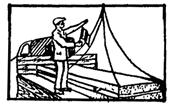 |
Правая рука согнута в локте с флажком, направленным вверх; над флажком ладонь левой руки |
|
Поднять груз или крюк |
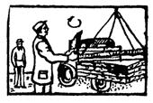 |
Правая рука согнута в локте с флажком, направленным вверх; флажком описываются круговые движения |
|
Опустить груз или крюк |
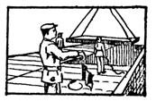 |
Правая рука согнута в локте с флажком, направленным вниз; флажком описываются круговые движения |
|
Посадить груз на место или незначительно опустить груз или крюк |
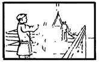 |
Правая рука согнута в локте с флажком, направленным вниз; под флажком ладонь левой руки |
|
Переместить груз кареткой (тележкой) крана |
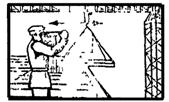 |
Правая рука согнута в локте с флажком, поднятым выше плеча, направленным горизонтально в сторону требуемого перемещения |
|
Передвинуть кран или переместить груз вдоль пути |
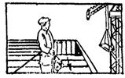 |
Рука согнута в локте с флажком на уровне пояса, направленным в сторону требуемого движения |
|
Стоп (аварийная остановка) |
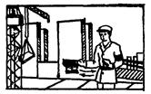 |
Резкое движение обеими руками, согнутыми в локтях, с сигнальным флажком в правой руке на уровне пояса |
|
Опустить стрелу |
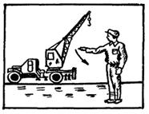 |
Опускание вытянутой руки, предварительно поднятой до вертикального положения; ладонь раскрыта |
|
Поднять стрелу |
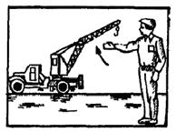 |
Подъем вытянутой руки, предварительно опущенной до вертикального положения; ладонь раскрыта |
|
Повернуть стрелу |
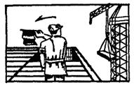 |
Горизонтально вытянутую руку с флажком на уровне плеча повернуть в сторону требуемого поворота стрелы |
|
Осторожно передвинуть кран, переместить груз или повернуть стрелу (применяется перед подачей основного сигнала в случае надобности незначительного перемещения) |
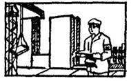 |
Руки согнуты в локтях, флажок в правой руке направлен горизонтально с упором конца в ладонь левой руки |
|
Прекратить движение (подъем, опускание, поворот, передвижение). |
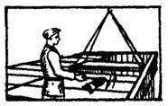 |
Резкое движение правой руки с флажком по горизонтали вправо и влево на уровне пояса |
Примечания:
1. Подача сигналов производится флажком красного или желтого цвета. При этом флажок должен быть в развернутом виде.
2. По окончании надобности в подаче сигналов флажок должен быть свернут.
|
Штамп строительно-монтажной |
(Лицевая сторона) Утверждаю Главный инженер организации ___________________________ (дата, подпись) |
|
“ ” _______ 19 __ г. нижеподписавшаяся комиссия в составе: ___________________________________________________________________________ ___________________________________________________________________________ ___________________________________________________________________________ действующая на основании приказа от “ ” ________ 19 __г. № _____ по СМУ (заводу), произвела техническое освидетельствование следующих средств и устройств
Члены комиссии __________________________________________________________ (подписи) Указанные средства и устройства в эксплуатацию принял производитель работ ________________________________________________ (подпись) |
В отношении поражения людей электрических током помещения делятся на три группы:
I. Помещения с повышенной опасностью.
Такие помещения характеризуются наличием в них одного из следующих условий, создающих повышенную опасность:
а) сырости или проводящей пыли;
б) токопроводящих полов (металлических, земляных, железобетонных, кирпичных и т.п.);
в) высокой температуры (жаркие помещения);
г) возможности одновременного прикосновения человека к имеющим соединение с землей металлоконструкциями зданий, технологическим аппаратам, механизмам и т.п., с одной стороны, и к металлическим корпусам электрооборудования, с другой.
II. Особо опасные помещения.
Такие помещения характеризуются наличием одного из следующих условий, создающих особую опасность:
а) особой сырости;
б) химически активной среды;
в) одновременного наличия двух или более условий повышенной опасности (см. п. I).
Ш. Помещения без повышенной опасности.
В этих помещениях отсутствуют условия, создающие повышенную опасность и особую опасность.
Сырыми помещениями называются помещения, в которых относительная влажность длительно превышает 75%.
Особо сырыми помещениями называются помещения, в которых относительная влажность воздуха близка к 100% (потолок, стены, пол и предметы, находящиеся в помещении, покрыты влагой).
Жаркими помещениями называются помещения, в которых температура воздуха длительно превышает 30°С.
Пыльными помещениями называются помещения, в которых по условиям производства выделяется технологическая пыль в таком количестве, что она может оседать на проводах, проникать внутрь машин, аппаратов и т.п.
Помещениями с химически активной средой называются такие помещения, в которых по условиям производства постоянно или длительно содержатся пары или образуются отложения, действующие разрушающе на изоляцию и токоведущие части электрооборудования.
|
Жидкость |
ГОСТ, ТУ |
Температура вспышки (не ниже), °С |
Температура застывания (не выше) °С |
|
Масло индустриальное |
|||
|
И - 12А |
ГОСТ 20799-75 |
165 |
-30 |
|
И - 20А |
То же |
180 |
-15 |
|
И - 25А |
- |
180 |
-15 |
1. Составление ванн
Количество каждого компонента, предусмотренное рецептурой ванны, рассчитывают исходя из состава ванны и ее полезной водяной емкости. Компоненты раствора в зависимости от местных условий могут растворяться отдельно каждый во вспомогательных сосудах или же непосредственно в ванне, в которой производят обезжиривание.
Растворение производят при нагреве до 60 - 70°С и энергичном перемешивании раствора механическими мешалками или барботажем воздуха.
После составления ванны определяют общую щелочность свежеприготовленного состава по методике, приведенной ниже.
2. Контроль и корректировка ванн
Контрольные анализы состава моющих растворов для обезжиривания производят не реже двух раз в неделю определением общей щелочности раствора. Корректировку ванн производят по результатам контрольных анализов. Общую смену моющего раствора при регулярной загрузке ванны производят один раз в неделю.
При эксплуатации ванн необходимо не допускать скопление загрязнений на поверхности раствора. Регулярно удалять масло с поверхности с помощью специальных приспособлений (ковшей с дырчатым дном или сеткой). Перед тем как взять пробу раствора для контрольного анализа, необходимо довести раствор до нужного уровня и перемешать.
3. Определение общей щелочности раствора
Применяемые реактивы и посуда:
Кислота соляная по ГОСТ 3118-67; 0,1 н. раствора.
Индикатор метиловый оранжевый по ГОСТ 10816-64 (рабочий раствор готовят растворением 0,1 г индикатора в 100 см3 дистиллированной воды).
Вода дистиллированная по ГОСТ 6709-72.
Колбы конические по ГОСТ 1770-74 вместимостью 250 см3.
Пипетки мерные по ГОСТ 1770-74 вместимостью 5 см3.
Цилиндры мерные по ГОСТ 1770-74 вместимостью 100 см3
Бюретка мерная по ГОСТ 1770-74 вместимостью 25 см3
Проведение испытаний и расчет результатов:
5 см3 охлажденного моющего раствора помещают в коническую колбу вместимостью 250 см, разбавляют водой до 100 см3, прибавляют 2-3 капли раствора метилена оранжевого и титруют 0,1 н. раствора НСl до перехода желтой окраски в бледно-розовую.
Общую щелочность раствора X в пересчете на NaОН в г/дм вычисляют по формуле
X = a×0,004K×100/m
где:
а - количество 0,1н. раствора НСl, затраченного на титрование, см3;
0.004 - титр раствора НСl, выраженный в г NаОН;
К - поправка к титру 0,1 н. раствора НСl;
m - количество раствора, взятого на анализ, см3.
4. Корректировка ванн
По результатам контрольных анализов производят корректировку ванн в том случае, если общая щелочность раствора уменьшится более чем на 30%.
При корректировке в ванну добавляют все компоненты раствора. Расчет добавляемых количеств производят по основному компоненту, определяющему общую щелочность раствора.
Например, по контрольному анализу раствора № 1 состава:
10 г NaОН, 15 г Nа3РО4, 2 г Nа2SiO3, 2-3 г ТС - 10, 1000 см3 воды - общая щелочность снизилась на 35%. При корректировке на 1000 см3 раствора необходимо добавить 3,5 г NаОН, 5,2 г Nа3РО4 0,7 г Nа2SiO3, 1 г ТС - 10.
|
Город________________________ “ ” _______ 19 __ г. Предприятие (завод-заказчик) _________________________________________________ Цех (объект) ________________________________________________________________ Мы, нижеподписавшиеся __________________________________________________ (название монтирующей организации) ___________________________________________________________________________ в лице _____________________________________________________________________ (должность, фамилия, имя, отчество) ___________________________________________________________________________ и представитель технадзора заказчика в лице ____________________________________ (должность, фамилия, имя, отчество) составили настоящий акт в том, что проведено обезжиривание ___________________________________________________________________________ (наименование изделий) Обезжиривание проводилось __________________________________________________ (метод обезжиривания) Заключение: Разрешается применение изделий, указанных в настоящем акте, для монтажа на кислородных трубных проводках. Представители: Монтирующей организации ________________________________________________ (подпись) Технадзора заказчика ______________________________________________________ (подпись) |
|
Город_______________________ “ ” _______ 19 __ г. Предприятие (завод-заказчик) _________________________________________________ Цех (объект) ________________________________________________________________ Мы, нижеподписавшиеся __________________________________________________ (название монтирующей организации) ___________________________________________________________________________ в лице _____________________________________________________________________ (должность, фамилия, имя, отчество) ___________________________________________________________________________ и представитель технадзора заказчика в лице ____________________________________ (должность, фамилия, имя, отчество) составили настоящий акт в том, что были произведены наружный осмотр и испытания арматуры, изготовленной заводом-поставщиком ___________________________________________________________________________ Характеристика и условия испытания арматуры
При осмотре и испытании арматуры дефектов не обнаружено. Арматура считается выдержавшей испытания и пригодной для монтажа. Представители: Монтирующей организации ________________________________________________ (подпись) Технадзора заказчика ______________________________________________________ (подпись) |
|||||||||||||||||||||||||||||||||||||
|
___________________________________________________________________________ (предприятие, объект, участок или группа механизмов) ___________________________________________________________________________ ___________________________________________________________________________ (Левая сторона)
(Правая сторона)
(Последняя страница) В журнале _______ листов Пронумеровано и скреплено печатью Начальник участка Прораб “ ” _________19 __ г. |
||||||||||||||||||
Перед поступлением на работу с вредными и опасными условиями труда рабочие, ИТР и служащие обязаны пройти медицинский осмотр. Руководители строительно-монтажных организаций и предприятий после установления районной санитарно-эпидемиологической станцией неблагоприятных профессиональных и производственных факторов на участках (цехах) и объектах составляют и утверждают для отдела кадров два списка производств и профессий с указанием характера выполняемой работы и сроков периодических медицинских осмотров: один - в целях профилактики профессиональных заболеваний, второй - в целях безопасности труда (в соответствии с приложениями 1 и 2 к приказу Министра здравоохранения СССР от 30 мая 1969 г. № 400).
Работник отдела кадров, получив заявление трудящегося о принятии его на работу, на основании утвержденных списков производств и профессий организации или предприятия заполняет направление на медицинский осмотр и направляет работника в лечебно-профилактическое учреждение.
После получения положительных результатов медицинского осмотра вновь поступающего на работу оформляют приказом с указанием основной (или основной и смежной) профессии, по которой (по которым) он проходил медицинский осмотр.
|
№ п/п |
Наименование производств и профессии |
Сроки периодических медицинских осмотров |
|
1 |
2 |
3 |
|
Приложение 1 |
||
|
1.6 |
Пайка и лужение поверхностей с применением свинецсодержащих сплавов |
1 раз в 24 месяца |
|
1.11 |
Малярные работы при постоянном применении свинцовых красок, в том числе при приготовлении красок, а также при съеме и удалении старой свинцовой краски |
1 раз в 12 месяцев |
|
2.3 |
Применение этилированного бензина, испытание, ремонт, разборка и промывка авиа- и автомоторов, заправка самолетов и др. машин, слив и налив этилированного бензина, очистка установок и тары на нефтебазах, бензохранилищах, колонках |
1 раз в 12 месяцев |
|
3.4 |
Работа на производствах и лабораториях с ртутными приборами и аппаратами: |
|
|
а) при работе с открытой ртутью |
1 раз в 6 месяцев |
|
|
б) при работе с закрытой ртутью |
1 раз в 12 месяцев |
|
|
4.3 |
Сварка электродами с обмазками, содержащими марганец: |
|
|
а) при работе в закрытых пространствах |
1 раз в 12 месяцев |
|
|
б) при работе в открытых пространствах |
1 раз в 24 месяца2 |
|
|
34.1 |
Получение и применение эпоксидных смол, клеев типов 88 и БФ и др. |
1 раз в 24 месяца1 |
|
35.2 |
Применение дихлорэтана и четыреххлористого углерода |
1 раз в 12 месяцев |
|
35.4 |
Применение хлорвинила, полихлорвинила, перхлорвиниловых и хлорвиниловых смол, хлористого метилена, бромэтила и бромметила и др. галоидопроизводных жирного ряда |
1 раз в 24 месяца |
|
46.21 |
Производство и применение абразивных материалов и инструментов |
1 раз в 24 месяца3 |
|
46.26 |
Электросварочные работы: |
|
|
а) при работе в закрытых пространствах |
1 раз в 12 месяцев |
|
|
б) при работе в открытых пространствах |
1 раз в 24 месяца |
|
|
50.1 |
Работа в условиях интенсивного производственного шума. В производствах с превышением уровней шума в любой активной полосе осмотры производятся в следующие сроке: |
|
|
а) до 10 децибел |
1 раз в 36 месяцев4 |
|
|
б) от 11 до 20 децибел |
1 раз в 24 месяца |
|
|
в) свыше 20 децибел |
1 раз в 12 месяцев |
|
|
52.1 |
Все виды работ с радиоактивными веществами и источниками ионизирующих излучений |
1 раз в 12 месяцев5 |
|
Приложение 2 |
||
|
2 |
Работы на высоте и связанные с подъемом на высоту (верхолазы), а также по обслуживанию подъемных сооружений |
1 раз в 12 месяцев |
|
11 |
Работа с применением строительно-монтажного пистолета |
Подлежат только предварительным медицинским осмотрам |
|
13 |
Работы на механическом оборудовании: токарных, револьверных, фрезерных и др. станках, а также штамповочных прессах |
Подлежат только предварительным медицинским осмотрам |
1 Дерматовенерологом 1 раз в 6 месяцев.
2 Первый осмотр через 3 года от начала работы в условиях воздействия марганца (с учетом работы на др. предприятиях).
3 Первый осмотр через 3 года от начала работы в условиях воздействия пыли (с учетом работы на других предприятиях).
4 Отоларингологом 1 раз в 24 месяца.
5 При авариях или ремонтных работах, связанных с обучением, сроки осмотра устанавливаются индивидуально по показаниям.
1. Андронов Н.В., Осипенко Ю.К., Яновский П. И. Справочник по монтажу КИП и средств автоматизации. М., Стройиздат, 1969.
2. Гаврилов П. И. Сварка и резка металлов с применением газов-заменителей ацетилена. М., "Машиностроение", 1968.
3. Инструктивные указания по технике безопасности при монтаже приборов контроля и средств автоматизации. М., 1970. (ЦБНТИ Минмонтажспецстроя СССР).
4. Инструкция по проектированию бытовых зданий и помещений строительно-монтажных организаций. СН 276-74. М., Стройиздат, 1975.
5. Искусственное освещение. Нормы потребления. СНиП II-А.9-7 М., Стройиздат, 1972.
6. Оборудование кислородное. Методы обезжиривания. Применяемые материалы. ОСТ 26-04-312-71. М., 1971. (Минхиммаш).
7. Положение по оформлению оперативной и отчетной документации по технике безопасности в организациях и на предприятиях Минмонтажспецстроя СССР. М., 1977, (ЦБНТИ Минмонтажспецстроя СССР).
8. Правила техники безопасности при электромонтажных работах. М., “Энергия”, 1973.
9. Правила дорожного движения. М., “Транспорт”, 1975.
10. Правила производства и приемки работ. Электротехнические устройства. СНиП III-33-76. М., Стройиздат, 1977.
11. Правила производства и приемки работ. Система автоматизации. СНиП III-34-74. М., Стройиздат, 1976.
12. Разъяснения к “Правилам технической эксплуатации электроустановок потребителей (ПТЭ)” и “Правилам техники безопасности при эксплуатации электроустановок потребителей (ПТБ)”.
13. Санитарные правила проектирования оборудования, эксплуатации и содержания производственных и лабораторных помещений, предназначенных для проведения работ со ртутью, ее соединениями и приборами с ртутным заполнением. М., 1969 (Минздрав СССР).
14. Сборник официальных материалов по охране труда в строительстве и промышленности строительных материалов. М. Стройизд 1970.
15. Техника безопасности в строительстве. СНиП III-А.11-70. М., Атомиздат, 1976.
16. “Пистолет монтажный поршневой ПЦ 52-1”. Техническое описание и инструкция по эксплуатации.
17. Типовое положение об основных обязанностях и ответственности за состояние техники безопасности и охраны труда должностных лиц строительно-монтажных и специализированных управлений минмонтажспецстроя СССР. М., 1973. (ЦБНТИ Минмонтажспецстроя СССР).
18. Указания по технике безопасности при монтаже средств промышленной связи и СЦБ. Часть 3. ВЕН 292-72/ММСС СССР. М., 1972. (ЦБНТИ Минмонтажспецстроя СССР).
19. Указания по проектированию электрического освещения строительных площадок. СН 81-70. М., Стройиздат, 1971.
20. Файгензон М.С. Стендовая поверка и индивидуальное опробование приборов и средств автоматизации. М., Стройиздат, 1967.
СОДЕРЖАНИЕ